CHANGE 01
One body and hand pipeline Claude’s welded SDF hands and attachMarine body remain the default visible geometry. The merge ports grip/wrist fitting, corresponding open/rail morph targets, gait, planted feet, posture blending and state resets onto them. Detailed weapons, per-pixel camouflage, baked crews and instanced crowd LOD remain. The old alternate garment body helper is removed.
What the evidence shows The LP body keeps a continuous silhouette, camouflage and coherent stand/walk/prone/seated poses. The prone pelvis correction clears the belt pouches. Final first-person profiles remove the large protruding M203 support-thumb cap, move the M60 hand30mm rearward and clear the LAW sight window. Small M203 fingertip slivers and imperfect M60 furniture contact remain.
886 first-person pose/geometry checks pass, including deformed thumb clearance and nail winding; maximum cuff error 2.33e-16 m. Seven body checks pass, including 192 phases across three LODs. Support soles range from -1.7 to +12.3 mm; prone body minimum is +4.5 mm. Four material modes and 60 weapon/state combinations pass Node contracts. Focused rendered fixture passes 9/9 assertions with no browser errors. Nail-patch winding checks pass for both hands, three grip radii, trigger on/off and the directed thumb profiles. Limits of this check Still images do not prove continuous animation or a full gait cycle. The seated fixture has no chair and partly crops the boots. The mapped SDF morph is an authored approximation. Initial default-pose comparison with independent SDF meshes found p95 distances of 1.93–2.80 mm and maximum distances of 9.99–13.25 mm. These are initial mapping measurements, not a guarantee for every new profile. Inherited wide glossy eyes, puckered lips, jaw/neck junction and imperfect third-person grips remain. Visible high-detail near body plus rifle is 31,836 triangles; low-detail near is 26,144. The 15k near-figure aspiration is not met. This merge preserves Claude’s geometry and makes no performance claim. M203 fingertips can still show small skin slivers against furniture. The M60 hand now reaches the forearm front lip, with some fingers around the adjoining barrel/gas assembly. The grips are improved but not intersection-free. 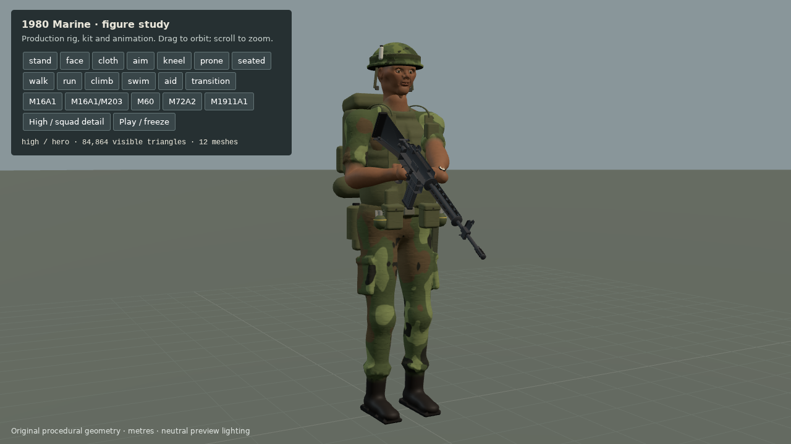
stand The retained LP Marine body in the preview fixture. Run figures · Visually reviewed 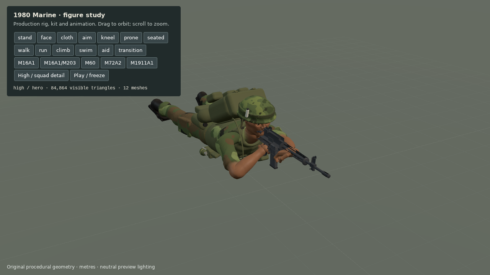
prone Prone posture with belt pouches clear of the floor in this snapshot. Run figures · Visually reviewed 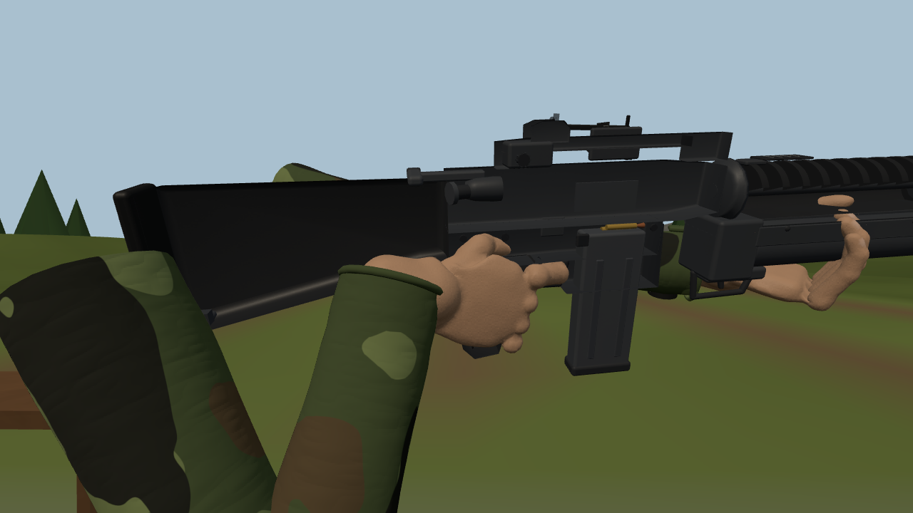
Initial merged SDF pose Initial pose exposed an apparently detached support-thumbnail cap. Automated pose checks alone did not identify it. Run figures-initial · Visually reviewed After directed thumb profile The large support-thumb cap is removed in the same inspection camera; small fingertip/furniture slivers remain. Run figures · Visually reviewed 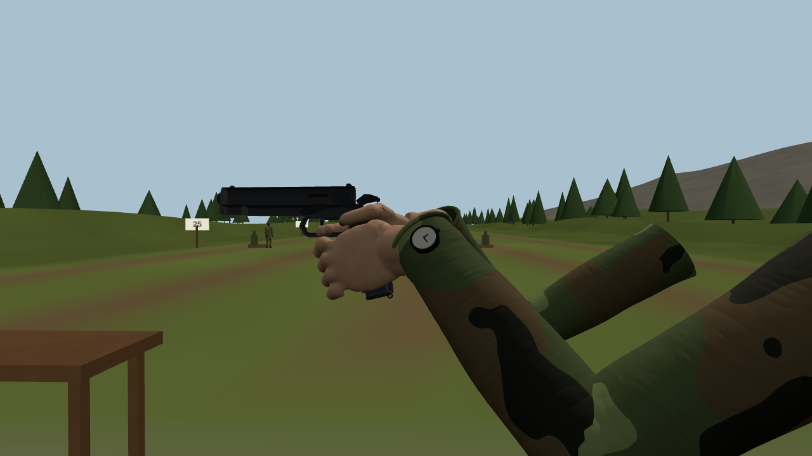
m1911-support Two-handed M1911 pose with preserved wrist fitting. Run figures · Visually reviewed 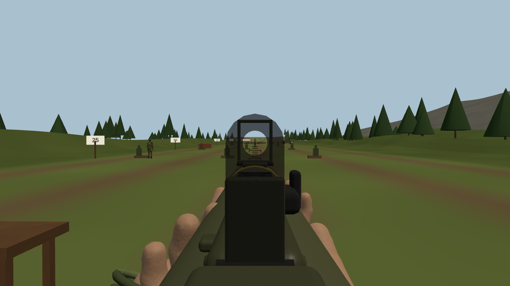
law-aim Final LAW aim view: the full reticle window is clear of the thumbs. Run figures · Visually reviewed 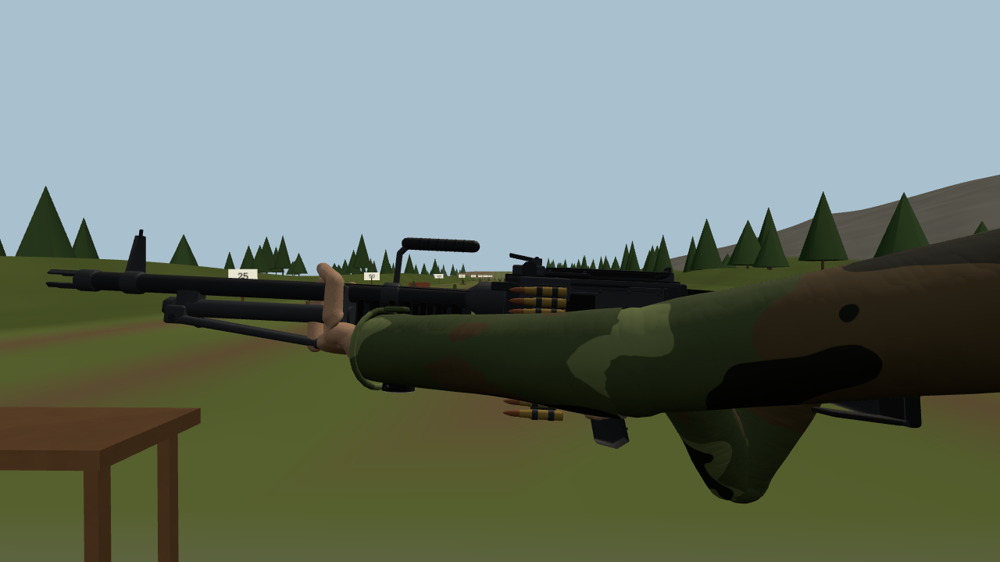
m60-support M60 support moved 30mm rearward to the forearm front lip; full furniture contact is still imperfect. Run figures · Visually reviewed CHANGE 02
Third-person grip limits remain visible The people preview can select production weapons and classes with fixed weapon-local cameras. This reveals the separate static tpHand/body pose path rather than substituting first-person hands.
What the evidence shows Six third-person close-ups pass their structural/camera assertions but fail visual grip-fit review: M203 furniture intersects the palm, GL-mode hands do not match a convincing launcher grasp, M60 support remains forward and LAW palms intersect the tube. First-person profile fixes do not alter these poses.
9/9 checks establish intended weapon/class, M203 furniture and one visible LP body; they do not establish correct grip contact. Limits of this check Claude explicitly directed recording these four third-person fit cases OPEN in this merge, then correcting them as a separate follow-up after the tested HEAD is posted. An oblique LAW sight view is not an eye-line reticle test. 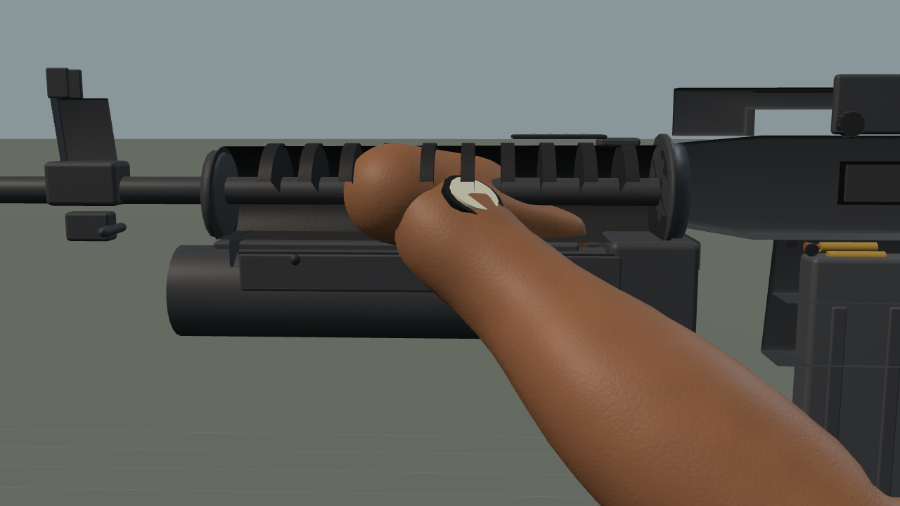
tp-m203-rifle-support M203 rifle mode: handguard ribs visibly cross the support palm. Run tp · Visually reviewed 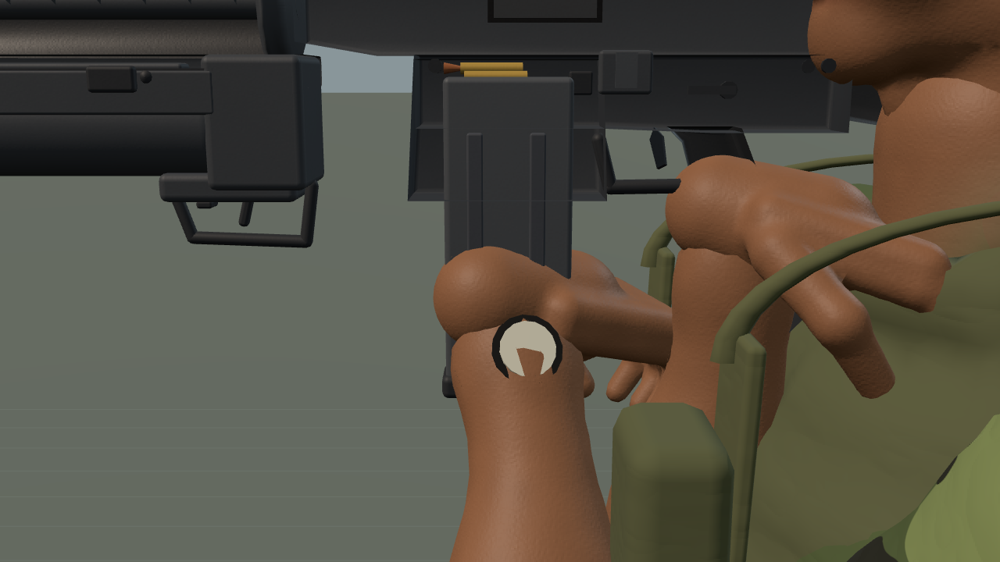
tp-m203-gl-support M203 grenade mode: support intersects the magazine; the right hand stays at the rifle grip. Run tp · Visually reviewed 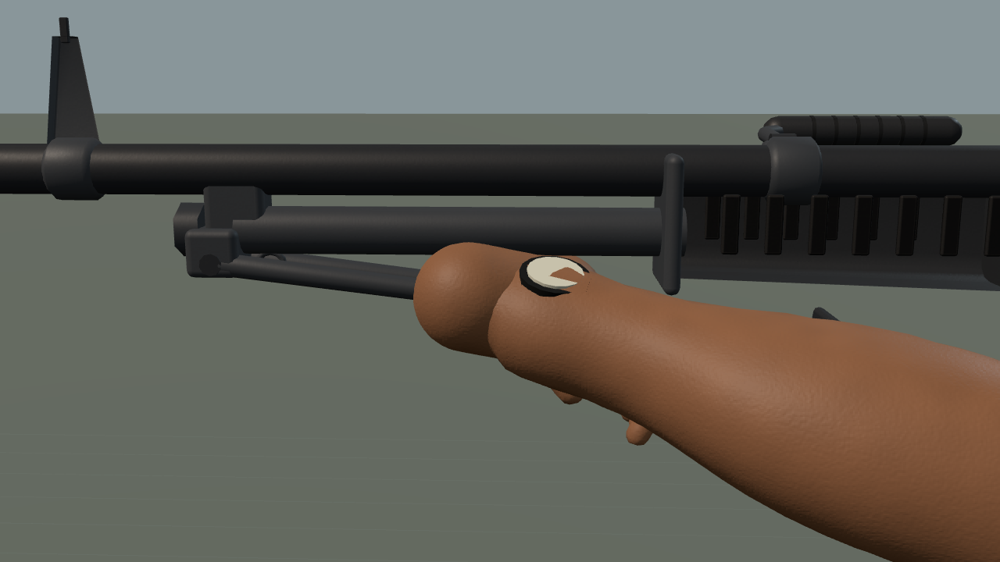
tp-m60-support M60: static third-person support grip remains forward around the folded bipod. Run tp · Visually reviewed 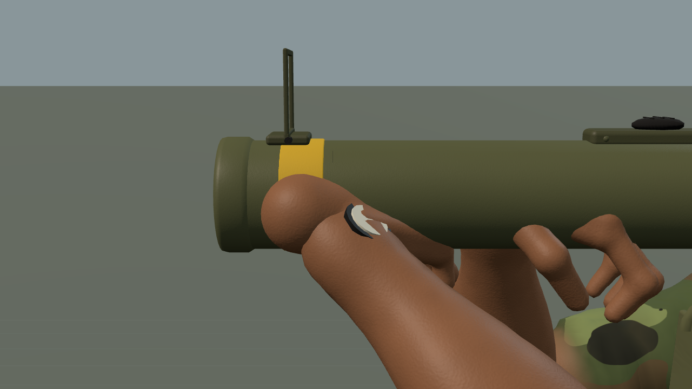
tp-law-support LAW left palm intersects the tube; this is an unresolved third-person pose. Run tp · Visually reviewed 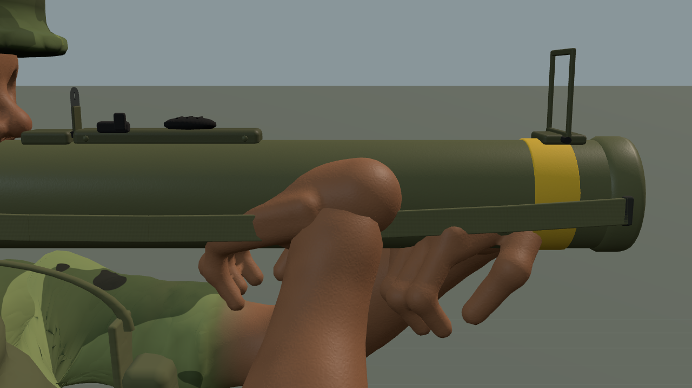
tp-law-trigger LAW right palm/tube contact also remains incorrect. Run tp · Visually reviewed 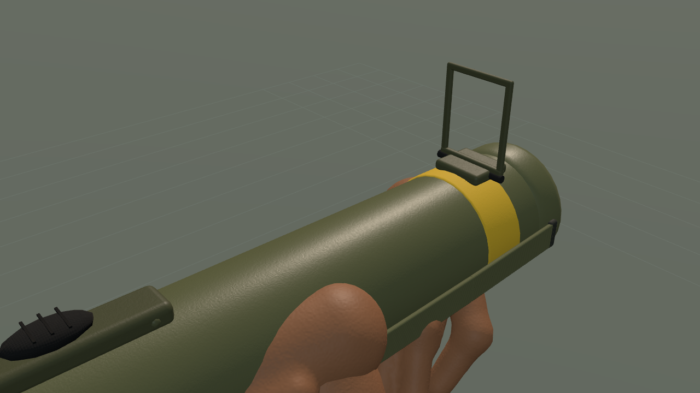
tp-law-sights-oblique The oblique LAW sight frame is clear, but this is not an eye-line aiming test. Run tp · Visually reviewed CHANGE 03
Radio commands survive the renderer merge The main loop retains radio updates before simulation early returns, PTT input masking and new-game resets. Command readbacks, map marks, paid requests and actual mission outcomes remain connected to the live game. The radio desk keeps Orders, Missions, Traffic and Settings.
What the evidence shows The production radio desk passes 16/16 DOM/parser/transaction checks. Desktop readback controls and the 390px Orders layout stay inside the viewport. The live radio operations scene passes 13/13: CAP requests await readback, confirmation spends materiel and queues a real Tomcat, duplicate confirmation cannot spend twice, and actual Marine squads receive formation, cease-fire and marked-point movement orders. Pause cancels unconfirmed requests. Recovery passes 9/9: completed, cancelled and failed field-support missions report their actual outcome instead of inferring success from fuel level. Required smoke passes 5/5 on the final frozen source; the final voice rerun passes 29/29, both without browser or console errors.
Required smoke5/5 passes with no browser/console errors. Limits of this check Automated command transcripts bypass physical speech recognition. The radio recovery fixture sets terminal flags on real drop missions; it does not fly a full resupply sortie. 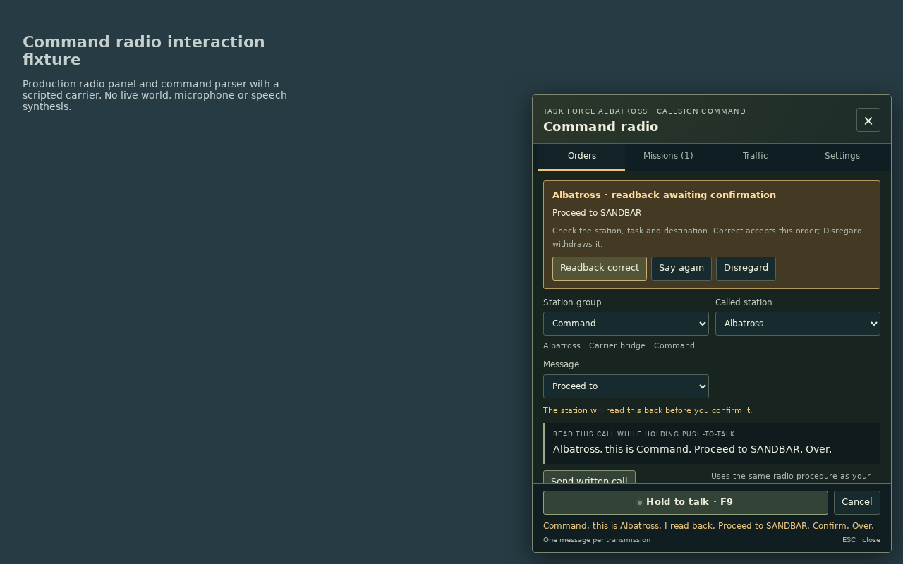
readback-desktop Carrier readback in the production radio panel with a scripted controller. Run desk · Visually reviewed 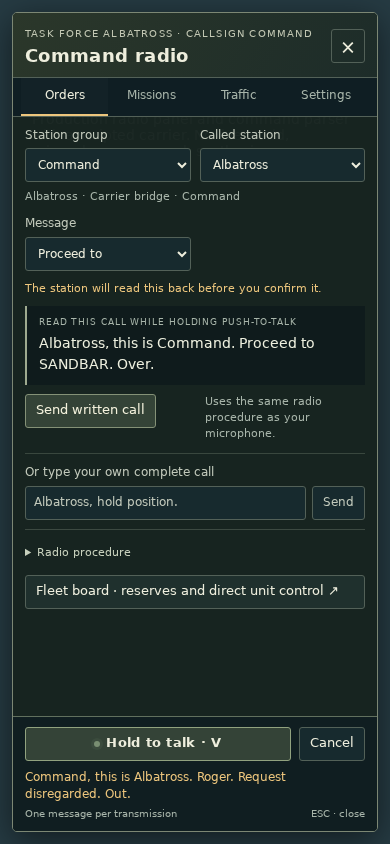
orders-mobile 390px Orders view after PTT rebinding; no microphone was opened. Run desk · Visually reviewed 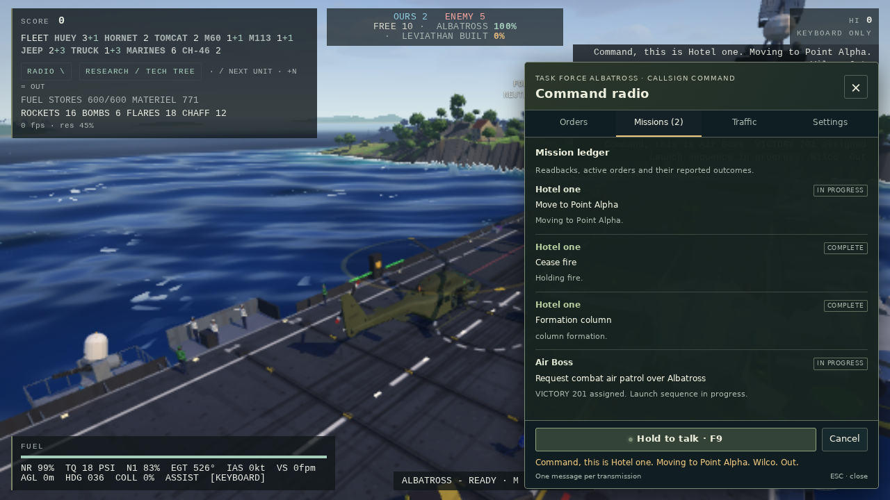
mission-ledger Live command ledger: actual Tomcat assignment and Marine orders are tracked after readback confirmation. Run operations · Visually reviewed 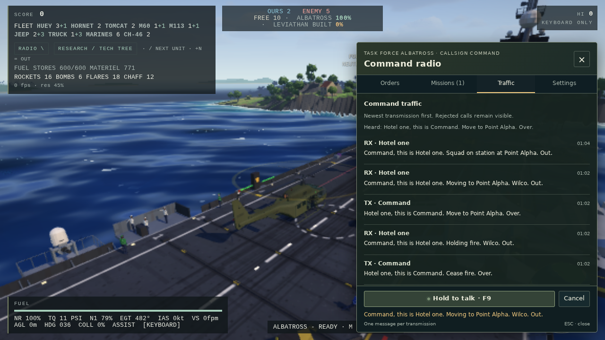
command-traffic Live radio traffic records requests and acknowledgements through the production controllers. Run operations · Visually reviewed CHANGE 04
Speech and server contracts Quieter filtered speech and local synthesis are retained. Both local speech endpoints keep opt-in capability reporting and same-origin guards alongside desktop/XR benchmark storage. Real callback contracts, DOM narrowing and worklet globals make the changed radio/input files compatible with Claude’s checkJs ratchet.
What the evidence shows Node checks pass: PTT 23, parser/native lifecycle 38, radio net 56, operations 46, bank/hooks 19, recognition lifecycle 18, local synthesis 21 and HOTAS 3 groups. All 12 server checks pass, including actual benchmark storage beside the speech routes. Syntax passes 609/609. Full semantic typing reports 578 diagnostics against the unchanged 606 ceiling. Changed voice/HOTAS and body modules have none; the detailed weapon file retains one inherited tuple/spread diagnostic.
No type suppressions or baseline increase. Inherited XR eye-camera handling reads matrixWorld without updating the render-time camera. Final voices 29/29: live role call-outs, no overlapping utterances, urgent interruption, quiet bus and rendered radio band-pass, distance fade, wall muffling, pause/OFF cancellation, bounded queues and no-installed-voices silence. Limits of this check The total 578 diagnostics are existing project debt, so the project is not type-clean. This integration rerun uses generated speech in headless Chrome. It does not establish subjective voice quality, physical microphone operation in Opera GX or physical HOTAS/headset behavior. No new voice pack or external speech service is introduced. DOM, server and speech lifecycle checks were run after radio typing reconciliation; subsequent source changes only affected figure profiles and their preview/fixtures.
PERFORMANCE EVIDENCE
Measured without recording Frame times describe the recorded host and fixture. Software rendering, emulator results and a short sample do not certify consumer GPU or headset performance. Observed fps is 1000 / mean interval; video encoding rate is unrelated.
No structured frame benchmark was included.
PROVENANCE & CHECKS
Reproduce and inspect In the assigned agent-acb3f3f66119cd838 worktree, merge fixed input f8abdbb into ngc/look-voices. Run node tools/check.mjs syntax and types. From tools run CHROME_PATH=/home/jayjay/.cache/chs/chrome.sh node snap.mjs scenes/voices.mjs, scenes/smoke.json, scenes/radioops.mjs, scenes/radiorecovery.mjs and scenes/radiofiguremerge.mjs. Preview poses and mission terminal states are scripted fixtures, as described below. Third-person grip inspection: scenes/radiogripmerge.mjs. DOM interaction: CHROME_PATH=/home/jayjay/.cache/chs/chrome.sh node tools/radiodeskbench.mjs. Final accepted game captures share hash2c86e9b56cba59d6cba5f5ec6fa7d99d81093a275448f18325f19f493208cb97; the original source-inventory failure and pre-profile figure are explicitly diagnostic.
PASS · figures · 9/9 checks PASS figuresScene / started radiofiguremerge / 2026-10-29T09:38:19.673Z Source 787b4c17fa3ee149fa7d3b13bd3f66a2fce96ff2 (working tree dirty) Game content SHA-256 2c86e9b56cba59d6cba5f5ec6fa7d99d81093a275448f18325f19f493208cb97 Server provenance Owned server serves the fingerprinted local game tree. {"root":"/home/jayjay/thrust-zarch/.claude/worktrees/agent-acb3f3f66119cd838","commit":"787b4c17fa3ee149fa7d3b13bd3f66a2fce96ff2","branch":"ngc/look-voices","gameTree":"29426da431d131f4755554436e6bfb53174b7329","gameSha256":"2c86e9b56cba59d6cba5f5ec6fa7d99d81093a275448f18325f19f493208cb97","dirty":true,"status":"MM MODLOG.md\n M README.md\nM docs/ngc1980/BIBLE.md\n M docs/ngc1980/COORDINATION.md\nM docs/ngc1980/LOOK-PLAN.md\nA docs/ngc1980/PERF-BUDGETS.md\nA docs/ngc1980/TYPESCRIPT.md\nA docs/ngc1980/evidence/look-nature/sbs-01-hq.png\nA docs/ngc1980/evidence/look-nature/sbs-02-oak.png\nA docs/ngc1980/evidence/look-nature/sbs-03-pine.png\nA docs/ngc1980/evidence/look-nature/sbs-04-fir.png\nA docs/ngc1980/evidence/look-nature/sbs-05-backlit.png\nA docs/ngc1980/evidence/look-nature/sbs-06-forest.png\nA docs/ngc1980/evidence/look-nature/sbs-07-village.png\nA docs/ngc1980/evidence/look-nature/sbs-08-village30.png\nA docs/ngc1980/evidence/look-nature/sbs-09-heli30.png\nA docs/ngc1980/evidence/look-nature/sbs-10-heli200.png\nA docs/ngc1980/evidence/look-nature/sbs-11-jet1200.png\nA docs/ngc1980/evidence/look-people/crews-seated-kneeling.png\nA docs/ngc1980/evidence/look-people/deck-crew-close.png\nA docs/ngc1980/evidence/look-people/deck-crew.png\nA docs/ngc1980/evidence/look-people/face-bare.png\nA docs/ngc1980/evidence/look-people/face-helmet-34.png\nA docs/ngc1980/evidence/look-people/face-helmet.png\nA docs/ngc1980/evidence/look-people/fp-hip-at-home.png\nA docs/ngc1980/evidence/look-people/fp-self-aid.png\nA docs/ngc1980/evidence/look-people/fp-swim.png\nA docs/ngc1980/evidence/look-people/heads-navy.png\nA docs/ngc1980/evidence/look-people/heads-pilots.png\nA docs/ngc1980/evidence/look-people/huey-pilots-after.png\nA docs/ngc1980/evidence/look-people/roles.png\nA docs/ngc1980/evidence/look-people/squad-10m.png\nA docs/ngc1980/evidence/look-people/squad-40m-crowd-lod-after.png\nA docs/ngc1980/evidence/look-people/tomcat-crew-close.png\nA docs/ngc1980/evidence/look-people/tomcat-crew-side.png\nA docs/ngc1980/evidence/look-people/townsfolk.png\nA docs/ngc1980/evidence/look-people/tp-carry-after.png\nA docs/ngc1980/evidence/look-people/tp-front-close.png\nA docs/ngc1980/evidence/look-people/tp-swim-after.png\nA docs/ngc1980/evidence/look-people/vm-grip-close.png\nA docs/ngc1980/evidence/look-people/vm-side-r.png\nA docs/ngc1980/evidence/look-people/weapons-after.png\nA docs/ngc1980/evidence/perf-render/sbs-deck.png\nA docs/ngc1980/evidence/perf-render/sbs-hard.png\nA docs/ngc1980/evidence/perf-render/sbs-home200.png\nA docs/ngc1980/evidence/perf-render/sbs-hq.png\nA docs/ngc1980/evidence/perf-render/sbs-jeep.png\nA docs/ngc1980/evidence/perf-render/sbs-jet1200.png\nA docs/ngc1980/evidence/perf-render/sbs-m113.png\nA docs/ngc1980/evidence/perf-render/sbs-msaa-hq.png\nA docs/ngc1980/evidence/perf-render/sbs-pad.png\nA docs/ngc1980/evidence/perf-render/sbs-tank.png\nA docs/ngc1980/findings/look-nature.md\nA docs/ngc1980/findings/look-people.md\n M docs/ngc1980/findings/look-voices.md\nA docs/ngc1980/findings/perf-cpu.md\nA docs/ngc1980/findings/perf-render.md\nA docs/ngc1980/findings/typecheck.md\nA docs/ngc1980/findings/xr-fix.md\nA docs/ngc1980/reference/people/SOURCES.md\n M game/dev/people.js\nM game/index.html\nM game/js/craft.js\nM game/js/craftjet.js\nM game/js/crafttomcat.js\nM game/js/fog.js\nM game/js/ground.js\nM game/js/heli.js\nMM game/js/hotas.js\nA game/js/hypot.js\nM game/js/interiors/crewfig.js\nM game/js/jetplay.js\nM game/js/main.js\nM game/js/marine.js\nA game/js/perf/bench.js\nA game/js/perfhud.js\nM game/js/renderkit/adopt.js\nM game/js/renderkit/effects.js\nM game/js/renderkit/gamemats.js\nM game/js/renderkit/gamepost.js\nM game/js/renderkit/light.js\nA game/js/renderkit/lod.js\nM game/js/renderkit/materials.js\nA game/js/renderkit/merge.js\nM game/js/renderkit/nature.js\nM game/js/renderkit/ui.js\nM game/js/sim/zone.js\nM game/js/ui/markerlayer.js\nM game/js/units/air/rotary/ch46craft.js\nM game/js/units/air/rotary/ch46unit.js\nM game/js/units/air/rotary/figures.js\nM game/js/units/air/rotary/mv22unit.js\nM game/js/units/air/rotary/rb.js\nM game/js/units/air/rotary/rotary.js\nM game/js/units/air/rotary/rotor.js\nM game/js/units/air/rotary/squad.js\nM game/js/units/air/rotary/waspfm.js\nM game/js/units/air/rotary/waspunit.js\nM game/js/units/air/tomcatmodel.js\nM game/js/units/armor/armorcraft.js\nM game/js/units/armor/tankmodel.js\nM game/js/units/defence/brain.js\nM game/js/units/groundwar/groundsim.js\nM game/js/units/groundwar/groundwar.js\nM game/js/units/groundwar/marine.js\n M game/js/units/groundwar/marinefigure.js\nA game/js/units/infantry/figgeo.js\nA game/js/units/infantry/figinst.js\n M game/js/units/infantry/figurematerials.js\nMM game/js/units/infantry/handkit.js\n M game/js/units/infantry/handposes.js\nA game/js/units/infantry/humanfig.js\nD game/js/units/infantry/humanmesh.js\nM game/js/units/infantry/invui.js\nM game/js/units/infantry/items.js\n M game/js/units/infantry/meshkit.js\nA game/js/units/infantry/sdfmesh.js\nMM game/js/units/infantry/soldiermodel.js\nMM game/js/units/infantry/viewmodel.js\nM game/js/units/infantry/weaponmodels.js\nM game/js/units/naval/deckcrew.js\nM game/js/units/naval/fishsim.js\nM game/js/units/naval/kraken.js\nM game/js/units/naval/navalfx.js\nM game/js/units/naval/seamotion.js\nM game/js/units/wheeled/index.js\nM game/js/units/wheeled/tyre.js\nM game/js/units/wheeled/vehiclefm.js\nM game/js/units/wheeled/wheeledcraft.js\nM game/js/units/wheeled/wheeledenv.js\nM game/js/vehicle.js\n M game/js/voice/commandnet.js\n M game/js/voice/commandpanel.js\n M game/js/voice/hooks.js\n M game/js/voice/localrecognition.js\n M game/js/voice/microphone.js\n M game/js/voice/operations.js\n M game/js/voice/ptt.js\n M game/js/voice/recognition.js\n M game/js/voice/voice.js\nM game/js/war.js\nM game/js/world.js\nM game/js/world/ambient.js\nM game/js/world/chunkgen.js\nM game/js/world/life.js\nM game/js/world/worldworker.js\nM game/js/xr/bench.js\nAM game/types/globals.d.ts\nA game/vendor/html2canvas.d.ts\nM launcher/install.sh\nM tools/README.md\nM tools/check.mjs\n M tools/figuresurfacebench.mjs\n M tools/firstpersonbench.mjs\nA tools/grid.mjs\nA tools/hypotbench.mjs\nM tools/package-lock.json\nM tools/package.json\n M tools/peoplebench.mjs\nA tools/profsummary.mjs\nA tools/profunder.mjs\nA tools/scenes/cpuprofile.mjs\nA tools/scenes/looknature.mjs\nA tools/scenes/lookpeople.mjs\nA tools/scenes/lpcrews.mjs\nA tools/scenes/lpstats.mjs\nA tools/scenes/lpstudio.mjs\nA tools/scenes/lpweapons.mjs\nA tools/scenes/mergecheck.mjs\n M tools/scenes/people.mjs\nA tools/scenes/perfab.mjs\nA tools/scenes/perfbench.mjs\nA tools/scenes/perfbudget.mjs\nA tools/scenes/perflod.mjs\nM tools/serve.mjs\n M tools/servebench.mjs\nM tools/sim/headless.mjs\nA tools/simdiff.mjs\nA tools/typecheck-baseline.json\nA tools/typecheck.mjs\nA tools/warprof.mjs\nA tsconfig.json\n?? tools/scenes/radiofiguremerge.mjs\n?? tools/scenes/radiogripmerge.mjs"} Browser / renderer HeadlessChrome/156.0.8078.47 / ANGLE (Google, Vulkan 1.3.0 (SwiftShader Device (Subzero) (0x0000C0DE)), SwiftShader driver) Viewport / seed {"width":1280,"height":720,"deviceScaleFactor":1} / unseeded Fixture query dev/infantry.html?debug&fixed&nosway&res=1&ui=0&seed=1980Host linux 6.18.33.2-microsoft-standard-WSL2 · AMD Ryzen 9 9950X3D 16-Core Processor Assertions (9/9 passed) ✓ m16: finite first-person transforms ✓ m203: finite first-person transforms ✓ m60: finite first-person transforms ✓ m1911: finite first-person transforms ✓ law: finite first-person transforms ✓ stance/reload: finite first-person transforms ✓ body overlays: finite first-person transforms ✓ One visible SDF hand per arm retains the fitted profile ✓ notblank(transition-0p4) Full run result PASS · figures-initial · 9/9 checks PASS figures-initialScene / started radiofiguremerge / 2026-10-29T09:07:03.557Z Source 787b4c17fa3ee149fa7d3b13bd3f66a2fce96ff2 (working tree dirty) Game content SHA-256 a0e1850f87fe2cd93bc6b47137e783afa6d781cc7796983329811693454430ef Server provenance Owned server serves the fingerprinted local game tree. {"root":"/home/jayjay/thrust-zarch/.claude/worktrees/agent-acb3f3f66119cd838","commit":"787b4c17fa3ee149fa7d3b13bd3f66a2fce96ff2","branch":"ngc/look-voices","gameTree":"29426da431d131f4755554436e6bfb53174b7329","gameSha256":"a0e1850f87fe2cd93bc6b47137e783afa6d781cc7796983329811693454430ef","dirty":true,"status":"M MODLOG.md\nM docs/ngc1980/BIBLE.md\n M docs/ngc1980/COORDINATION.md\nM docs/ngc1980/LOOK-PLAN.md\nA docs/ngc1980/PERF-BUDGETS.md\nA docs/ngc1980/TYPESCRIPT.md\nA docs/ngc1980/evidence/look-nature/sbs-01-hq.png\nA docs/ngc1980/evidence/look-nature/sbs-02-oak.png\nA docs/ngc1980/evidence/look-nature/sbs-03-pine.png\nA docs/ngc1980/evidence/look-nature/sbs-04-fir.png\nA docs/ngc1980/evidence/look-nature/sbs-05-backlit.png\nA docs/ngc1980/evidence/look-nature/sbs-06-forest.png\nA docs/ngc1980/evidence/look-nature/sbs-07-village.png\nA docs/ngc1980/evidence/look-nature/sbs-08-village30.png\nA docs/ngc1980/evidence/look-nature/sbs-09-heli30.png\nA docs/ngc1980/evidence/look-nature/sbs-10-heli200.png\nA docs/ngc1980/evidence/look-nature/sbs-11-jet1200.png\nA docs/ngc1980/evidence/look-people/crews-seated-kneeling.png\nA docs/ngc1980/evidence/look-people/deck-crew-close.png\nA docs/ngc1980/evidence/look-people/deck-crew.png\nA docs/ngc1980/evidence/look-people/face-bare.png\nA docs/ngc1980/evidence/look-people/face-helmet-34.png\nA docs/ngc1980/evidence/look-people/face-helmet.png\nA docs/ngc1980/evidence/look-people/fp-hip-at-home.png\nA docs/ngc1980/evidence/look-people/fp-self-aid.png\nA docs/ngc1980/evidence/look-people/fp-swim.png\nA docs/ngc1980/evidence/look-people/heads-navy.png\nA docs/ngc1980/evidence/look-people/heads-pilots.png\nA docs/ngc1980/evidence/look-people/huey-pilots-after.png\nA docs/ngc1980/evidence/look-people/roles.png\nA docs/ngc1980/evidence/look-people/squad-10m.png\nA docs/ngc1980/evidence/look-people/squad-40m-crowd-lod-after.png\nA docs/ngc1980/evidence/look-people/tomcat-crew-close.png\nA docs/ngc1980/evidence/look-people/tomcat-crew-side.png\nA docs/ngc1980/evidence/look-people/townsfolk.png\nA docs/ngc1980/evidence/look-people/tp-carry-after.png\nA docs/ngc1980/evidence/look-people/tp-front-close.png\nA docs/ngc1980/evidence/look-people/tp-swim-after.png\nA docs/ngc1980/evidence/look-people/vm-grip-close.png\nA docs/ngc1980/evidence/look-people/vm-side-r.png\nA docs/ngc1980/evidence/look-people/weapons-after.png\nA docs/ngc1980/evidence/perf-render/sbs-deck.png\nA docs/ngc1980/evidence/perf-render/sbs-hard.png\nA docs/ngc1980/evidence/perf-render/sbs-home200.png\nA docs/ngc1980/evidence/perf-render/sbs-hq.png\nA docs/ngc1980/evidence/perf-render/sbs-jeep.png\nA docs/ngc1980/evidence/perf-render/sbs-jet1200.png\nA docs/ngc1980/evidence/perf-render/sbs-m113.png\nA docs/ngc1980/evidence/perf-render/sbs-msaa-hq.png\nA docs/ngc1980/evidence/perf-render/sbs-pad.png\nA docs/ngc1980/evidence/perf-render/sbs-tank.png\nA docs/ngc1980/findings/look-nature.md\nA docs/ngc1980/findings/look-people.md\nA docs/ngc1980/findings/perf-cpu.md\nA docs/ngc1980/findings/perf-render.md\nA docs/ngc1980/findings/typecheck.md\nA docs/ngc1980/findings/xr-fix.md\nA docs/ngc1980/reference/people/SOURCES.md\n M game/dev/people.js\nM game/index.html\nM game/js/craft.js\nM game/js/craftjet.js\nM game/js/crafttomcat.js\nM game/js/fog.js\nM game/js/ground.js\nM game/js/heli.js\nMM game/js/hotas.js\nA game/js/hypot.js\nM game/js/interiors/crewfig.js\nM game/js/jetplay.js\nM game/js/main.js\nM game/js/marine.js\nA game/js/perf/bench.js\nA game/js/perfhud.js\nM game/js/renderkit/adopt.js\nM game/js/renderkit/effects.js\nM game/js/renderkit/gamemats.js\nM game/js/renderkit/gamepost.js\nM game/js/renderkit/light.js\nA game/js/renderkit/lod.js\nM game/js/renderkit/materials.js\nA game/js/renderkit/merge.js\nM game/js/renderkit/nature.js\nM game/js/renderkit/ui.js\nM game/js/sim/zone.js\nM game/js/ui/markerlayer.js\nM game/js/units/air/rotary/ch46craft.js\nM game/js/units/air/rotary/ch46unit.js\nM game/js/units/air/rotary/figures.js\nM game/js/units/air/rotary/mv22unit.js\nM game/js/units/air/rotary/rb.js\nM game/js/units/air/rotary/rotary.js\nM game/js/units/air/rotary/rotor.js\nM game/js/units/air/rotary/squad.js\nM game/js/units/air/rotary/waspfm.js\nM game/js/units/air/rotary/waspunit.js\nM game/js/units/air/tomcatmodel.js\nM game/js/units/armor/armorcraft.js\nM game/js/units/armor/tankmodel.js\nM game/js/units/defence/brain.js\nM game/js/units/groundwar/groundsim.js\nM game/js/units/groundwar/groundwar.js\nM game/js/units/groundwar/marine.js\n M game/js/units/groundwar/marinefigure.js\nA game/js/units/infantry/figgeo.js\nA game/js/units/infantry/figinst.js\n M game/js/units/infantry/figurematerials.js\nM game/js/units/infantry/handkit.js\nA game/js/units/infantry/humanfig.js\n D game/js/units/infantry/humanmesh.js\nM game/js/units/infantry/invui.js\nM game/js/units/infantry/items.js\n M game/js/units/infantry/meshkit.js\nA game/js/units/infantry/sdfmesh.js\nMM game/js/units/infantry/soldiermodel.js\nM game/js/units/infantry/viewmodel.js\nM game/js/units/infantry/weaponmodels.js\nM game/js/units/naval/deckcrew.js\nM game/js/units/naval/fishsim.js\nM game/js/units/naval/kraken.js\nM game/js/units/naval/navalfx.js\nM game/js/units/naval/seamotion.js\nM game/js/units/wheeled/index.js\nM game/js/units/wheeled/tyre.js\nM game/js/units/wheeled/vehiclefm.js\nM game/js/units/wheeled/wheeledcraft.js\nM game/js/units/wheeled/wheeledenv.js\nM game/js/vehicle.js\n M game/js/voice/commandnet.js\n M game/js/voice/commandpanel.js\n M game/js/voice/hooks.js\n M game/js/voice/localrecognition.js\n M game/js/voice/microphone.js\n M game/js/voice/operations.js\n M game/js/voice/ptt.js\n M game/js/voice/recognition.js\n M game/js/voice/voice.js\nM game/js/war.js\nM game/js/world.js\nM game/js/world/ambient.js\nM game/js/world/chunkgen.js\nM game/js/world/life.js\nM game/js/world/worldworker.js\nM game/js/xr/bench.js\nAM game/types/globals.d.ts\nA game/vendor/html2canvas.d.ts\nM launcher/install.sh\nM tools/README.md\nM tools/check.mjs\n M tools/figuresurfacebench.mjs\n M tools/firstpersonbench.mjs\nA tools/grid.mjs\nA tools/hypotbench.mjs\nM tools/package-lock.json\nM tools/package.json\n M tools/peoplebench.mjs\nA tools/profsummary.mjs\nA tools/profunder.mjs\nA tools/scenes/cpuprofile.mjs\nA tools/scenes/looknature.mjs\nA tools/scenes/lookpeople.mjs\nA tools/scenes/lpcrews.mjs\nA tools/scenes/lpstats.mjs\nA tools/scenes/lpstudio.mjs\nA tools/scenes/lpweapons.mjs\nA tools/scenes/mergecheck.mjs\n M tools/scenes/people.mjs\nA tools/scenes/perfab.mjs\nA tools/scenes/perfbench.mjs\nA tools/scenes/perfbudget.mjs\nA tools/scenes/perflod.mjs\nM tools/serve.mjs\n M tools/servebench.mjs\nM tools/sim/headless.mjs\nA tools/simdiff.mjs\nA tools/typecheck-baseline.json\nA tools/typecheck.mjs\nA tools/warprof.mjs\nA tsconfig.json\n?? tools/scenes/radiofiguremerge.mjs"} Browser / renderer HeadlessChrome/156.0.8078.47 / ANGLE (Google, Vulkan 1.3.0 (SwiftShader Device (Subzero) (0x0000C0DE)), SwiftShader driver) Viewport / seed {"width":1280,"height":720,"deviceScaleFactor":1} / unseeded Fixture query dev/infantry.html?debug&fixed&nosway&res=1&ui=0&seed=1980Host linux 6.18.33.2-microsoft-standard-WSL2 · AMD Ryzen 9 9950X3D 16-Core Processor Assertions (9/9 passed) ✓ m16: finite first-person transforms ✓ m203: finite first-person transforms ✓ m60: finite first-person transforms ✓ m1911: finite first-person transforms ✓ law: finite first-person transforms ✓ stance/reload: finite first-person transforms ✓ body overlays: finite first-person transforms ✓ One visible SDF hand per arm retains the fitted profile ✓ notblank(transition-0p4) Full run result PASS · tp · 9/9 checks PASS tpScene / started radiogripmerge / 2026-10-29T09:37:20.729Z Source 787b4c17fa3ee149fa7d3b13bd3f66a2fce96ff2 (working tree dirty) Game content SHA-256 2c86e9b56cba59d6cba5f5ec6fa7d99d81093a275448f18325f19f493208cb97 Server provenance Owned server serves the fingerprinted local game tree. {"root":"/home/jayjay/thrust-zarch/.claude/worktrees/agent-acb3f3f66119cd838","commit":"787b4c17fa3ee149fa7d3b13bd3f66a2fce96ff2","branch":"ngc/look-voices","gameTree":"29426da431d131f4755554436e6bfb53174b7329","gameSha256":"2c86e9b56cba59d6cba5f5ec6fa7d99d81093a275448f18325f19f493208cb97","dirty":true,"status":"MM MODLOG.md\n M README.md\nM docs/ngc1980/BIBLE.md\n M docs/ngc1980/COORDINATION.md\nM docs/ngc1980/LOOK-PLAN.md\nA docs/ngc1980/PERF-BUDGETS.md\nA docs/ngc1980/TYPESCRIPT.md\nA docs/ngc1980/evidence/look-nature/sbs-01-hq.png\nA docs/ngc1980/evidence/look-nature/sbs-02-oak.png\nA docs/ngc1980/evidence/look-nature/sbs-03-pine.png\nA docs/ngc1980/evidence/look-nature/sbs-04-fir.png\nA docs/ngc1980/evidence/look-nature/sbs-05-backlit.png\nA docs/ngc1980/evidence/look-nature/sbs-06-forest.png\nA docs/ngc1980/evidence/look-nature/sbs-07-village.png\nA docs/ngc1980/evidence/look-nature/sbs-08-village30.png\nA docs/ngc1980/evidence/look-nature/sbs-09-heli30.png\nA docs/ngc1980/evidence/look-nature/sbs-10-heli200.png\nA docs/ngc1980/evidence/look-nature/sbs-11-jet1200.png\nA docs/ngc1980/evidence/look-people/crews-seated-kneeling.png\nA docs/ngc1980/evidence/look-people/deck-crew-close.png\nA docs/ngc1980/evidence/look-people/deck-crew.png\nA docs/ngc1980/evidence/look-people/face-bare.png\nA docs/ngc1980/evidence/look-people/face-helmet-34.png\nA docs/ngc1980/evidence/look-people/face-helmet.png\nA docs/ngc1980/evidence/look-people/fp-hip-at-home.png\nA docs/ngc1980/evidence/look-people/fp-self-aid.png\nA docs/ngc1980/evidence/look-people/fp-swim.png\nA docs/ngc1980/evidence/look-people/heads-navy.png\nA docs/ngc1980/evidence/look-people/heads-pilots.png\nA docs/ngc1980/evidence/look-people/huey-pilots-after.png\nA docs/ngc1980/evidence/look-people/roles.png\nA docs/ngc1980/evidence/look-people/squad-10m.png\nA docs/ngc1980/evidence/look-people/squad-40m-crowd-lod-after.png\nA docs/ngc1980/evidence/look-people/tomcat-crew-close.png\nA docs/ngc1980/evidence/look-people/tomcat-crew-side.png\nA docs/ngc1980/evidence/look-people/townsfolk.png\nA docs/ngc1980/evidence/look-people/tp-carry-after.png\nA docs/ngc1980/evidence/look-people/tp-front-close.png\nA docs/ngc1980/evidence/look-people/tp-swim-after.png\nA docs/ngc1980/evidence/look-people/vm-grip-close.png\nA docs/ngc1980/evidence/look-people/vm-side-r.png\nA docs/ngc1980/evidence/look-people/weapons-after.png\nA docs/ngc1980/evidence/perf-render/sbs-deck.png\nA docs/ngc1980/evidence/perf-render/sbs-hard.png\nA docs/ngc1980/evidence/perf-render/sbs-home200.png\nA docs/ngc1980/evidence/perf-render/sbs-hq.png\nA docs/ngc1980/evidence/perf-render/sbs-jeep.png\nA docs/ngc1980/evidence/perf-render/sbs-jet1200.png\nA docs/ngc1980/evidence/perf-render/sbs-m113.png\nA docs/ngc1980/evidence/perf-render/sbs-msaa-hq.png\nA docs/ngc1980/evidence/perf-render/sbs-pad.png\nA docs/ngc1980/evidence/perf-render/sbs-tank.png\nA docs/ngc1980/findings/look-nature.md\nA docs/ngc1980/findings/look-people.md\n M docs/ngc1980/findings/look-voices.md\nA docs/ngc1980/findings/perf-cpu.md\nA docs/ngc1980/findings/perf-render.md\nA docs/ngc1980/findings/typecheck.md\nA docs/ngc1980/findings/xr-fix.md\nA docs/ngc1980/reference/people/SOURCES.md\n M game/dev/people.js\nM game/index.html\nM game/js/craft.js\nM game/js/craftjet.js\nM game/js/crafttomcat.js\nM game/js/fog.js\nM game/js/ground.js\nM game/js/heli.js\nMM game/js/hotas.js\nA game/js/hypot.js\nM game/js/interiors/crewfig.js\nM game/js/jetplay.js\nM game/js/main.js\nM game/js/marine.js\nA game/js/perf/bench.js\nA game/js/perfhud.js\nM game/js/renderkit/adopt.js\nM game/js/renderkit/effects.js\nM game/js/renderkit/gamemats.js\nM game/js/renderkit/gamepost.js\nM game/js/renderkit/light.js\nA game/js/renderkit/lod.js\nM game/js/renderkit/materials.js\nA game/js/renderkit/merge.js\nM game/js/renderkit/nature.js\nM game/js/renderkit/ui.js\nM game/js/sim/zone.js\nM game/js/ui/markerlayer.js\nM game/js/units/air/rotary/ch46craft.js\nM game/js/units/air/rotary/ch46unit.js\nM game/js/units/air/rotary/figures.js\nM game/js/units/air/rotary/mv22unit.js\nM game/js/units/air/rotary/rb.js\nM game/js/units/air/rotary/rotary.js\nM game/js/units/air/rotary/rotor.js\nM game/js/units/air/rotary/squad.js\nM game/js/units/air/rotary/waspfm.js\nM game/js/units/air/rotary/waspunit.js\nM game/js/units/air/tomcatmodel.js\nM game/js/units/armor/armorcraft.js\nM game/js/units/armor/tankmodel.js\nM game/js/units/defence/brain.js\nM game/js/units/groundwar/groundsim.js\nM game/js/units/groundwar/groundwar.js\nM game/js/units/groundwar/marine.js\n M game/js/units/groundwar/marinefigure.js\nA game/js/units/infantry/figgeo.js\nA game/js/units/infantry/figinst.js\n M game/js/units/infantry/figurematerials.js\nMM game/js/units/infantry/handkit.js\n M game/js/units/infantry/handposes.js\nA game/js/units/infantry/humanfig.js\nD game/js/units/infantry/humanmesh.js\nM game/js/units/infantry/invui.js\nM game/js/units/infantry/items.js\n M game/js/units/infantry/meshkit.js\nA game/js/units/infantry/sdfmesh.js\nMM game/js/units/infantry/soldiermodel.js\nMM game/js/units/infantry/viewmodel.js\nM game/js/units/infantry/weaponmodels.js\nM game/js/units/naval/deckcrew.js\nM game/js/units/naval/fishsim.js\nM game/js/units/naval/kraken.js\nM game/js/units/naval/navalfx.js\nM game/js/units/naval/seamotion.js\nM game/js/units/wheeled/index.js\nM game/js/units/wheeled/tyre.js\nM game/js/units/wheeled/vehiclefm.js\nM game/js/units/wheeled/wheeledcraft.js\nM game/js/units/wheeled/wheeledenv.js\nM game/js/vehicle.js\n M game/js/voice/commandnet.js\n M game/js/voice/commandpanel.js\n M game/js/voice/hooks.js\n M game/js/voice/localrecognition.js\n M game/js/voice/microphone.js\n M game/js/voice/operations.js\n M game/js/voice/ptt.js\n M game/js/voice/recognition.js\n M game/js/voice/voice.js\nM game/js/war.js\nM game/js/world.js\nM game/js/world/ambient.js\nM game/js/world/chunkgen.js\nM game/js/world/life.js\nM game/js/world/worldworker.js\nM game/js/xr/bench.js\nAM game/types/globals.d.ts\nA game/vendor/html2canvas.d.ts\nM launcher/install.sh\nM tools/README.md\nM tools/check.mjs\n M tools/figuresurfacebench.mjs\n M tools/firstpersonbench.mjs\nA tools/grid.mjs\nA tools/hypotbench.mjs\nM tools/package-lock.json\nM tools/package.json\n M tools/peoplebench.mjs\nA tools/profsummary.mjs\nA tools/profunder.mjs\nA tools/scenes/cpuprofile.mjs\nA tools/scenes/looknature.mjs\nA tools/scenes/lookpeople.mjs\nA tools/scenes/lpcrews.mjs\nA tools/scenes/lpstats.mjs\nA tools/scenes/lpstudio.mjs\nA tools/scenes/lpweapons.mjs\nA tools/scenes/mergecheck.mjs\n M tools/scenes/people.mjs\nA tools/scenes/perfab.mjs\nA tools/scenes/perfbench.mjs\nA tools/scenes/perfbudget.mjs\nA tools/scenes/perflod.mjs\nM tools/serve.mjs\n M tools/servebench.mjs\nM tools/sim/headless.mjs\nA tools/simdiff.mjs\nA tools/typecheck-baseline.json\nA tools/typecheck.mjs\nA tools/warprof.mjs\nA tsconfig.json\n?? tools/scenes/radiofiguremerge.mjs\n?? tools/scenes/radiogripmerge.mjs"} Browser / renderer HeadlessChrome/156.0.8078.47 / ANGLE (Google, Vulkan 1.3.0 (SwiftShader Device (Subzero) (0x0000C0DE)), SwiftShader driver) Viewport / seed {"width":1280,"height":720,"deviceScaleFactor":1} / unseeded Fixture query dev/people.html?debug&res=1&ui=0Host linux 6.18.33.2-microsoft-standard-WSL2 · AMD Ryzen 9 9950X3D 16-Core Processor Assertions (9/9 passed) ✓ tp-m203-rifle-support: intended weapon/class and one LP body ✓ tp-m203-rifle-support: M203 furniture is present ✓ tp-m203-gl-support: intended weapon/class and one LP body ✓ tp-m203-gl-support: M203 furniture is present ✓ tp-m60-support: intended weapon/class and one LP body ✓ tp-law-support: intended weapon/class and one LP body ✓ tp-law-trigger: intended weapon/class and one LP body ✓ tp-law-sights-oblique: intended weapon/class and one LP body ✓ notblank(tp-law-sights-oblique) Full run result PASS · desk · 16/16 checks PASS deskScene / started radio-desk-dom / 2026-10-29T09:19:02.361Z Source 787b4c17fa3ee149fa7d3b13bd3f66a2fce96ff2 (working tree dirty) Game content SHA-256 3e7f8bfa87785914b5f0264d11d9c2db8c0c5e38ff39d78a0408cf8293aac3a0 Server provenance Production DOM/parser/transaction fixture. Renderer and speech hardware not involved; raw check payload retained. {} Browser / renderer / Viewport / seed {} / unseeded Fixture query Host Not recorded Assertions (16/16 passed) ✓ Opening the desk never opens a microphone ✓ Assisted destination selection prepares the exact addressed call ✓ Selecting a task does not execute it ✓ Written request reaches production parser and waits for readback ✓ Say again repeats a readback without sending the order ✓ Correct executes the requested carrier order once ✓ Mission ledger displays the actual task outcome without serializing live world objects ✓ Traffic shows the request, readback and confirmation ✓ PTT rebinding remains available without capturing audio ✓ Typed radio input owns its keys and never activates bound PTT ✓ Invalid manual procedure is rejected by the same parser ✓ Disregard withdraws an unconfirmed request without executing it ✓ 390px layout keeps radio controls inside the viewport ✓ Escape closes the panel and cancels unfinished input ✓ Legacy fleet board opens through a single explicit handoff ✓ No browser errors Full run result PASS · operations · 13/13 checks PASS operationsScene / started radioops / 2026-10-29T09:41:16.765Z Source 787b4c17fa3ee149fa7d3b13bd3f66a2fce96ff2 (working tree dirty) Game content SHA-256 2c86e9b56cba59d6cba5f5ec6fa7d99d81093a275448f18325f19f493208cb97 Server provenance Owned server serves the fingerprinted local game tree. {"root":"/home/jayjay/thrust-zarch/.claude/worktrees/agent-acb3f3f66119cd838","commit":"787b4c17fa3ee149fa7d3b13bd3f66a2fce96ff2","branch":"ngc/look-voices","gameTree":"29426da431d131f4755554436e6bfb53174b7329","gameSha256":"2c86e9b56cba59d6cba5f5ec6fa7d99d81093a275448f18325f19f493208cb97","dirty":true,"status":"MM MODLOG.md\n M README.md\nM docs/ngc1980/BIBLE.md\n M docs/ngc1980/COORDINATION.md\nM docs/ngc1980/LOOK-PLAN.md\nA docs/ngc1980/PERF-BUDGETS.md\nA docs/ngc1980/TYPESCRIPT.md\nA docs/ngc1980/evidence/look-nature/sbs-01-hq.png\nA docs/ngc1980/evidence/look-nature/sbs-02-oak.png\nA docs/ngc1980/evidence/look-nature/sbs-03-pine.png\nA docs/ngc1980/evidence/look-nature/sbs-04-fir.png\nA docs/ngc1980/evidence/look-nature/sbs-05-backlit.png\nA docs/ngc1980/evidence/look-nature/sbs-06-forest.png\nA docs/ngc1980/evidence/look-nature/sbs-07-village.png\nA docs/ngc1980/evidence/look-nature/sbs-08-village30.png\nA docs/ngc1980/evidence/look-nature/sbs-09-heli30.png\nA docs/ngc1980/evidence/look-nature/sbs-10-heli200.png\nA docs/ngc1980/evidence/look-nature/sbs-11-jet1200.png\nA docs/ngc1980/evidence/look-people/crews-seated-kneeling.png\nA docs/ngc1980/evidence/look-people/deck-crew-close.png\nA docs/ngc1980/evidence/look-people/deck-crew.png\nA docs/ngc1980/evidence/look-people/face-bare.png\nA docs/ngc1980/evidence/look-people/face-helmet-34.png\nA docs/ngc1980/evidence/look-people/face-helmet.png\nA docs/ngc1980/evidence/look-people/fp-hip-at-home.png\nA docs/ngc1980/evidence/look-people/fp-self-aid.png\nA docs/ngc1980/evidence/look-people/fp-swim.png\nA docs/ngc1980/evidence/look-people/heads-navy.png\nA docs/ngc1980/evidence/look-people/heads-pilots.png\nA docs/ngc1980/evidence/look-people/huey-pilots-after.png\nA docs/ngc1980/evidence/look-people/roles.png\nA docs/ngc1980/evidence/look-people/squad-10m.png\nA docs/ngc1980/evidence/look-people/squad-40m-crowd-lod-after.png\nA docs/ngc1980/evidence/look-people/tomcat-crew-close.png\nA docs/ngc1980/evidence/look-people/tomcat-crew-side.png\nA docs/ngc1980/evidence/look-people/townsfolk.png\nA docs/ngc1980/evidence/look-people/tp-carry-after.png\nA docs/ngc1980/evidence/look-people/tp-front-close.png\nA docs/ngc1980/evidence/look-people/tp-swim-after.png\nA docs/ngc1980/evidence/look-people/vm-grip-close.png\nA docs/ngc1980/evidence/look-people/vm-side-r.png\nA docs/ngc1980/evidence/look-people/weapons-after.png\nA docs/ngc1980/evidence/perf-render/sbs-deck.png\nA docs/ngc1980/evidence/perf-render/sbs-hard.png\nA docs/ngc1980/evidence/perf-render/sbs-home200.png\nA docs/ngc1980/evidence/perf-render/sbs-hq.png\nA docs/ngc1980/evidence/perf-render/sbs-jeep.png\nA docs/ngc1980/evidence/perf-render/sbs-jet1200.png\nA docs/ngc1980/evidence/perf-render/sbs-m113.png\nA docs/ngc1980/evidence/perf-render/sbs-msaa-hq.png\nA docs/ngc1980/evidence/perf-render/sbs-pad.png\nA docs/ngc1980/evidence/perf-render/sbs-tank.png\nA docs/ngc1980/findings/look-nature.md\nA docs/ngc1980/findings/look-people.md\n M docs/ngc1980/findings/look-voices.md\nA docs/ngc1980/findings/perf-cpu.md\nA docs/ngc1980/findings/perf-render.md\nA docs/ngc1980/findings/typecheck.md\nA docs/ngc1980/findings/xr-fix.md\nA docs/ngc1980/reference/people/SOURCES.md\n M game/dev/people.js\nM game/index.html\nM game/js/craft.js\nM game/js/craftjet.js\nM game/js/crafttomcat.js\nM game/js/fog.js\nM game/js/ground.js\nM game/js/heli.js\nMM game/js/hotas.js\nA game/js/hypot.js\nM game/js/interiors/crewfig.js\nM game/js/jetplay.js\nM game/js/main.js\nM game/js/marine.js\nA game/js/perf/bench.js\nA game/js/perfhud.js\nM game/js/renderkit/adopt.js\nM game/js/renderkit/effects.js\nM game/js/renderkit/gamemats.js\nM game/js/renderkit/gamepost.js\nM game/js/renderkit/light.js\nA game/js/renderkit/lod.js\nM game/js/renderkit/materials.js\nA game/js/renderkit/merge.js\nM game/js/renderkit/nature.js\nM game/js/renderkit/ui.js\nM game/js/sim/zone.js\nM game/js/ui/markerlayer.js\nM game/js/units/air/rotary/ch46craft.js\nM game/js/units/air/rotary/ch46unit.js\nM game/js/units/air/rotary/figures.js\nM game/js/units/air/rotary/mv22unit.js\nM game/js/units/air/rotary/rb.js\nM game/js/units/air/rotary/rotary.js\nM game/js/units/air/rotary/rotor.js\nM game/js/units/air/rotary/squad.js\nM game/js/units/air/rotary/waspfm.js\nM game/js/units/air/rotary/waspunit.js\nM game/js/units/air/tomcatmodel.js\nM game/js/units/armor/armorcraft.js\nM game/js/units/armor/tankmodel.js\nM game/js/units/defence/brain.js\nM game/js/units/groundwar/groundsim.js\nM game/js/units/groundwar/groundwar.js\nM game/js/units/groundwar/marine.js\n M game/js/units/groundwar/marinefigure.js\nA game/js/units/infantry/figgeo.js\nA game/js/units/infantry/figinst.js\n M game/js/units/infantry/figurematerials.js\nMM game/js/units/infantry/handkit.js\n M game/js/units/infantry/handposes.js\nA game/js/units/infantry/humanfig.js\nD game/js/units/infantry/humanmesh.js\nM game/js/units/infantry/invui.js\nM game/js/units/infantry/items.js\n M game/js/units/infantry/meshkit.js\nA game/js/units/infantry/sdfmesh.js\nMM game/js/units/infantry/soldiermodel.js\nMM game/js/units/infantry/viewmodel.js\nM game/js/units/infantry/weaponmodels.js\nM game/js/units/naval/deckcrew.js\nM game/js/units/naval/fishsim.js\nM game/js/units/naval/kraken.js\nM game/js/units/naval/navalfx.js\nM game/js/units/naval/seamotion.js\nM game/js/units/wheeled/index.js\nM game/js/units/wheeled/tyre.js\nM game/js/units/wheeled/vehiclefm.js\nM game/js/units/wheeled/wheeledcraft.js\nM game/js/units/wheeled/wheeledenv.js\nM game/js/vehicle.js\n M game/js/voice/commandnet.js\n M game/js/voice/commandpanel.js\n M game/js/voice/hooks.js\n M game/js/voice/localrecognition.js\n M game/js/voice/microphone.js\n M game/js/voice/operations.js\n M game/js/voice/ptt.js\n M game/js/voice/recognition.js\n M game/js/voice/voice.js\nM game/js/war.js\nM game/js/world.js\nM game/js/world/ambient.js\nM game/js/world/chunkgen.js\nM game/js/world/life.js\nM game/js/world/worldworker.js\nM game/js/xr/bench.js\nAM game/types/globals.d.ts\nA game/vendor/html2canvas.d.ts\nM launcher/install.sh\nM tools/README.md\nM tools/check.mjs\n M tools/figuresurfacebench.mjs\n M tools/firstpersonbench.mjs\nA tools/grid.mjs\nA tools/hypotbench.mjs\nM tools/package-lock.json\nM tools/package.json\n M tools/peoplebench.mjs\nA tools/profsummary.mjs\nA tools/profunder.mjs\nA tools/scenes/cpuprofile.mjs\nA tools/scenes/looknature.mjs\nA tools/scenes/lookpeople.mjs\nA tools/scenes/lpcrews.mjs\nA tools/scenes/lpstats.mjs\nA tools/scenes/lpstudio.mjs\nA tools/scenes/lpweapons.mjs\nA tools/scenes/mergecheck.mjs\n M tools/scenes/people.mjs\nA tools/scenes/perfab.mjs\nA tools/scenes/perfbench.mjs\nA tools/scenes/perfbudget.mjs\nA tools/scenes/perflod.mjs\nM tools/serve.mjs\n M tools/servebench.mjs\nM tools/sim/headless.mjs\nA tools/simdiff.mjs\nA tools/typecheck-baseline.json\nA tools/typecheck.mjs\nA tools/warprof.mjs\nA tsconfig.json\n?? tools/scenes/radiofiguremerge.mjs\n?? tools/scenes/radiogripmerge.mjs"} Browser / renderer HeadlessChrome/156.0.8078.47 / ANGLE (Google, Vulkan 1.3.0 (SwiftShader Device (Subzero) (0x0000C0DE)), SwiftShader driver) Viewport / seed {"width":1280,"height":720,"deviceScaleFactor":1} / unseeded Fixture query ?debug&auto&kb&res=0.45&peace&tech=maxHost linux 6.18.33.2-microsoft-standard-WSL2 · AMD Ryzen 9 9950X3D 16-Core Processor Assertions (13/13 passed) ✓ Backslash opens radio command desk ✓ live flight/support controllers present ✓ assisted CAP request waits for readback without spending ✓ confirmed patrol spends actual materiel and queues a real Tomcat ✓ patrol task remains active while aircraft launches ✓ duplicate confirmation cannot buy a second flight ✓ live squad accepts formation order ✓ live squad receives persistent cease fire ✓ marked point moves actual squad without revoking cease fire ✓ fleet board handoff closes radio desk ✓ carrier course also waits for readback ✓ pausing cancels unconfirmed orders ✓ radio desk never opened the physical microphone Full run result PASS · recovery · 9/9 checks PASS recoveryScene / started radiorecovery / 2026-10-29T09:44:14.475Z Source 787b4c17fa3ee149fa7d3b13bd3f66a2fce96ff2 (working tree dirty) Game content SHA-256 2c86e9b56cba59d6cba5f5ec6fa7d99d81093a275448f18325f19f493208cb97 Server provenance Owned server serves the fingerprinted local game tree. {"root":"/home/jayjay/thrust-zarch/.claude/worktrees/agent-acb3f3f66119cd838","commit":"787b4c17fa3ee149fa7d3b13bd3f66a2fce96ff2","branch":"ngc/look-voices","gameTree":"29426da431d131f4755554436e6bfb53174b7329","gameSha256":"2c86e9b56cba59d6cba5f5ec6fa7d99d81093a275448f18325f19f493208cb97","dirty":true,"status":"MM MODLOG.md\n M README.md\nM docs/ngc1980/BIBLE.md\n M docs/ngc1980/COORDINATION.md\nM docs/ngc1980/LOOK-PLAN.md\nA docs/ngc1980/PERF-BUDGETS.md\nA docs/ngc1980/TYPESCRIPT.md\nA docs/ngc1980/evidence/look-nature/sbs-01-hq.png\nA docs/ngc1980/evidence/look-nature/sbs-02-oak.png\nA docs/ngc1980/evidence/look-nature/sbs-03-pine.png\nA docs/ngc1980/evidence/look-nature/sbs-04-fir.png\nA docs/ngc1980/evidence/look-nature/sbs-05-backlit.png\nA docs/ngc1980/evidence/look-nature/sbs-06-forest.png\nA docs/ngc1980/evidence/look-nature/sbs-07-village.png\nA docs/ngc1980/evidence/look-nature/sbs-08-village30.png\nA docs/ngc1980/evidence/look-nature/sbs-09-heli30.png\nA docs/ngc1980/evidence/look-nature/sbs-10-heli200.png\nA docs/ngc1980/evidence/look-nature/sbs-11-jet1200.png\nA docs/ngc1980/evidence/look-people/crews-seated-kneeling.png\nA docs/ngc1980/evidence/look-people/deck-crew-close.png\nA docs/ngc1980/evidence/look-people/deck-crew.png\nA docs/ngc1980/evidence/look-people/face-bare.png\nA docs/ngc1980/evidence/look-people/face-helmet-34.png\nA docs/ngc1980/evidence/look-people/face-helmet.png\nA docs/ngc1980/evidence/look-people/fp-hip-at-home.png\nA docs/ngc1980/evidence/look-people/fp-self-aid.png\nA docs/ngc1980/evidence/look-people/fp-swim.png\nA docs/ngc1980/evidence/look-people/heads-navy.png\nA docs/ngc1980/evidence/look-people/heads-pilots.png\nA docs/ngc1980/evidence/look-people/huey-pilots-after.png\nA docs/ngc1980/evidence/look-people/roles.png\nA docs/ngc1980/evidence/look-people/squad-10m.png\nA docs/ngc1980/evidence/look-people/squad-40m-crowd-lod-after.png\nA docs/ngc1980/evidence/look-people/tomcat-crew-close.png\nA docs/ngc1980/evidence/look-people/tomcat-crew-side.png\nA docs/ngc1980/evidence/look-people/townsfolk.png\nA docs/ngc1980/evidence/look-people/tp-carry-after.png\nA docs/ngc1980/evidence/look-people/tp-front-close.png\nA docs/ngc1980/evidence/look-people/tp-swim-after.png\nA docs/ngc1980/evidence/look-people/vm-grip-close.png\nA docs/ngc1980/evidence/look-people/vm-side-r.png\nA docs/ngc1980/evidence/look-people/weapons-after.png\nA docs/ngc1980/evidence/perf-render/sbs-deck.png\nA docs/ngc1980/evidence/perf-render/sbs-hard.png\nA docs/ngc1980/evidence/perf-render/sbs-home200.png\nA docs/ngc1980/evidence/perf-render/sbs-hq.png\nA docs/ngc1980/evidence/perf-render/sbs-jeep.png\nA docs/ngc1980/evidence/perf-render/sbs-jet1200.png\nA docs/ngc1980/evidence/perf-render/sbs-m113.png\nA docs/ngc1980/evidence/perf-render/sbs-msaa-hq.png\nA docs/ngc1980/evidence/perf-render/sbs-pad.png\nA docs/ngc1980/evidence/perf-render/sbs-tank.png\nA docs/ngc1980/findings/look-nature.md\nA docs/ngc1980/findings/look-people.md\n M docs/ngc1980/findings/look-voices.md\nA docs/ngc1980/findings/perf-cpu.md\nA docs/ngc1980/findings/perf-render.md\nA docs/ngc1980/findings/typecheck.md\nA docs/ngc1980/findings/xr-fix.md\nA docs/ngc1980/reference/people/SOURCES.md\n M game/dev/people.js\nM game/index.html\nM game/js/craft.js\nM game/js/craftjet.js\nM game/js/crafttomcat.js\nM game/js/fog.js\nM game/js/ground.js\nM game/js/heli.js\nMM game/js/hotas.js\nA game/js/hypot.js\nM game/js/interiors/crewfig.js\nM game/js/jetplay.js\nM game/js/main.js\nM game/js/marine.js\nA game/js/perf/bench.js\nA game/js/perfhud.js\nM game/js/renderkit/adopt.js\nM game/js/renderkit/effects.js\nM game/js/renderkit/gamemats.js\nM game/js/renderkit/gamepost.js\nM game/js/renderkit/light.js\nA game/js/renderkit/lod.js\nM game/js/renderkit/materials.js\nA game/js/renderkit/merge.js\nM game/js/renderkit/nature.js\nM game/js/renderkit/ui.js\nM game/js/sim/zone.js\nM game/js/ui/markerlayer.js\nM game/js/units/air/rotary/ch46craft.js\nM game/js/units/air/rotary/ch46unit.js\nM game/js/units/air/rotary/figures.js\nM game/js/units/air/rotary/mv22unit.js\nM game/js/units/air/rotary/rb.js\nM game/js/units/air/rotary/rotary.js\nM game/js/units/air/rotary/rotor.js\nM game/js/units/air/rotary/squad.js\nM game/js/units/air/rotary/waspfm.js\nM game/js/units/air/rotary/waspunit.js\nM game/js/units/air/tomcatmodel.js\nM game/js/units/armor/armorcraft.js\nM game/js/units/armor/tankmodel.js\nM game/js/units/defence/brain.js\nM game/js/units/groundwar/groundsim.js\nM game/js/units/groundwar/groundwar.js\nM game/js/units/groundwar/marine.js\n M game/js/units/groundwar/marinefigure.js\nA game/js/units/infantry/figgeo.js\nA game/js/units/infantry/figinst.js\n M game/js/units/infantry/figurematerials.js\nMM game/js/units/infantry/handkit.js\n M game/js/units/infantry/handposes.js\nA game/js/units/infantry/humanfig.js\nD game/js/units/infantry/humanmesh.js\nM game/js/units/infantry/invui.js\nM game/js/units/infantry/items.js\n M game/js/units/infantry/meshkit.js\nA game/js/units/infantry/sdfmesh.js\nMM game/js/units/infantry/soldiermodel.js\nMM game/js/units/infantry/viewmodel.js\nM game/js/units/infantry/weaponmodels.js\nM game/js/units/naval/deckcrew.js\nM game/js/units/naval/fishsim.js\nM game/js/units/naval/kraken.js\nM game/js/units/naval/navalfx.js\nM game/js/units/naval/seamotion.js\nM game/js/units/wheeled/index.js\nM game/js/units/wheeled/tyre.js\nM game/js/units/wheeled/vehiclefm.js\nM game/js/units/wheeled/wheeledcraft.js\nM game/js/units/wheeled/wheeledenv.js\nM game/js/vehicle.js\n M game/js/voice/commandnet.js\n M game/js/voice/commandpanel.js\n M game/js/voice/hooks.js\n M game/js/voice/localrecognition.js\n M game/js/voice/microphone.js\n M game/js/voice/operations.js\n M game/js/voice/ptt.js\n M game/js/voice/recognition.js\n M game/js/voice/voice.js\nM game/js/war.js\nM game/js/world.js\nM game/js/world/ambient.js\nM game/js/world/chunkgen.js\nM game/js/world/life.js\nM game/js/world/worldworker.js\nM game/js/xr/bench.js\nAM game/types/globals.d.ts\nA game/vendor/html2canvas.d.ts\nM launcher/install.sh\nM tools/README.md\nM tools/check.mjs\n M tools/figuresurfacebench.mjs\n M tools/firstpersonbench.mjs\nA tools/grid.mjs\nA tools/hypotbench.mjs\nM tools/package-lock.json\nM tools/package.json\n M tools/peoplebench.mjs\nA tools/profsummary.mjs\nA tools/profunder.mjs\nA tools/scenes/cpuprofile.mjs\nA tools/scenes/looknature.mjs\nA tools/scenes/lookpeople.mjs\nA tools/scenes/lpcrews.mjs\nA tools/scenes/lpstats.mjs\nA tools/scenes/lpstudio.mjs\nA tools/scenes/lpweapons.mjs\nA tools/scenes/mergecheck.mjs\n M tools/scenes/people.mjs\nA tools/scenes/perfab.mjs\nA tools/scenes/perfbench.mjs\nA tools/scenes/perfbudget.mjs\nA tools/scenes/perflod.mjs\nM tools/serve.mjs\n M tools/servebench.mjs\nM tools/sim/headless.mjs\nA tools/simdiff.mjs\nA tools/typecheck-baseline.json\nA tools/typecheck.mjs\nA tools/warprof.mjs\nA tsconfig.json\n?? tools/scenes/radiofiguremerge.mjs\n?? tools/scenes/radiogripmerge.mjs"} Browser / renderer HeadlessChrome/156.0.8078.47 / ANGLE (Google, Vulkan 1.3.0 (SwiftShader Device (Subzero) (0x0000C0DE)), SwiftShader driver) Viewport / seed {"width":1280,"height":720,"deviceScaleFactor":1} / unseeded Fixture query ?debug&auto&kb&res=0.35&peace&tech=maxHost linux 6.18.33.2-microsoft-standard-WSL2 · AMD Ryzen 9 9950X3D 16-Core Processor Assertions (9/9 passed) ✓ field support request accepted: partial ✓ request retains the actual active drop mission: partial ✓ actual mission outcome wins over remaining fuel: partial ✓ field support request accepted: cancel ✓ request retains the actual active drop mission: cancel ✓ actual mission outcome wins over remaining fuel: cancel ✓ field support request accepted: failed ✓ request retains the actual active drop mission: failed ✓ actual mission outcome wins over remaining fuel: failed Full run result PASS · voices · 29/29 checks PASS voicesScene / started voices / 2026-10-29T09:47:10.327Z Source 787b4c17fa3ee149fa7d3b13bd3f66a2fce96ff2 (working tree dirty) Game content SHA-256 2c86e9b56cba59d6cba5f5ec6fa7d99d81093a275448f18325f19f493208cb97 Server provenance Owned server serves the fingerprinted local game tree. {"root":"/home/jayjay/thrust-zarch/.claude/worktrees/agent-acb3f3f66119cd838","commit":"787b4c17fa3ee149fa7d3b13bd3f66a2fce96ff2","branch":"ngc/look-voices","gameTree":"29426da431d131f4755554436e6bfb53174b7329","gameSha256":"2c86e9b56cba59d6cba5f5ec6fa7d99d81093a275448f18325f19f493208cb97","dirty":true,"status":"MM MODLOG.md\n M README.md\nM docs/ngc1980/BIBLE.md\n M docs/ngc1980/COORDINATION.md\nM docs/ngc1980/LOOK-PLAN.md\nA docs/ngc1980/PERF-BUDGETS.md\nA docs/ngc1980/TYPESCRIPT.md\nA docs/ngc1980/evidence/look-nature/sbs-01-hq.png\nA docs/ngc1980/evidence/look-nature/sbs-02-oak.png\nA docs/ngc1980/evidence/look-nature/sbs-03-pine.png\nA docs/ngc1980/evidence/look-nature/sbs-04-fir.png\nA docs/ngc1980/evidence/look-nature/sbs-05-backlit.png\nA docs/ngc1980/evidence/look-nature/sbs-06-forest.png\nA docs/ngc1980/evidence/look-nature/sbs-07-village.png\nA docs/ngc1980/evidence/look-nature/sbs-08-village30.png\nA docs/ngc1980/evidence/look-nature/sbs-09-heli30.png\nA docs/ngc1980/evidence/look-nature/sbs-10-heli200.png\nA docs/ngc1980/evidence/look-nature/sbs-11-jet1200.png\nA docs/ngc1980/evidence/look-people/crews-seated-kneeling.png\nA docs/ngc1980/evidence/look-people/deck-crew-close.png\nA docs/ngc1980/evidence/look-people/deck-crew.png\nA docs/ngc1980/evidence/look-people/face-bare.png\nA docs/ngc1980/evidence/look-people/face-helmet-34.png\nA docs/ngc1980/evidence/look-people/face-helmet.png\nA docs/ngc1980/evidence/look-people/fp-hip-at-home.png\nA docs/ngc1980/evidence/look-people/fp-self-aid.png\nA docs/ngc1980/evidence/look-people/fp-swim.png\nA docs/ngc1980/evidence/look-people/heads-navy.png\nA docs/ngc1980/evidence/look-people/heads-pilots.png\nA docs/ngc1980/evidence/look-people/huey-pilots-after.png\nA docs/ngc1980/evidence/look-people/roles.png\nA docs/ngc1980/evidence/look-people/squad-10m.png\nA docs/ngc1980/evidence/look-people/squad-40m-crowd-lod-after.png\nA docs/ngc1980/evidence/look-people/tomcat-crew-close.png\nA docs/ngc1980/evidence/look-people/tomcat-crew-side.png\nA docs/ngc1980/evidence/look-people/townsfolk.png\nA docs/ngc1980/evidence/look-people/tp-carry-after.png\nA docs/ngc1980/evidence/look-people/tp-front-close.png\nA docs/ngc1980/evidence/look-people/tp-swim-after.png\nA docs/ngc1980/evidence/look-people/vm-grip-close.png\nA docs/ngc1980/evidence/look-people/vm-side-r.png\nA docs/ngc1980/evidence/look-people/weapons-after.png\nA docs/ngc1980/evidence/perf-render/sbs-deck.png\nA docs/ngc1980/evidence/perf-render/sbs-hard.png\nA docs/ngc1980/evidence/perf-render/sbs-home200.png\nA docs/ngc1980/evidence/perf-render/sbs-hq.png\nA docs/ngc1980/evidence/perf-render/sbs-jeep.png\nA docs/ngc1980/evidence/perf-render/sbs-jet1200.png\nA docs/ngc1980/evidence/perf-render/sbs-m113.png\nA docs/ngc1980/evidence/perf-render/sbs-msaa-hq.png\nA docs/ngc1980/evidence/perf-render/sbs-pad.png\nA docs/ngc1980/evidence/perf-render/sbs-tank.png\nA docs/ngc1980/findings/look-nature.md\nA docs/ngc1980/findings/look-people.md\n M docs/ngc1980/findings/look-voices.md\nA docs/ngc1980/findings/perf-cpu.md\nA docs/ngc1980/findings/perf-render.md\nA docs/ngc1980/findings/typecheck.md\nA docs/ngc1980/findings/xr-fix.md\nA docs/ngc1980/reference/people/SOURCES.md\n M game/dev/people.js\nM game/index.html\nM game/js/craft.js\nM game/js/craftjet.js\nM game/js/crafttomcat.js\nM game/js/fog.js\nM game/js/ground.js\nM game/js/heli.js\nMM game/js/hotas.js\nA game/js/hypot.js\nM game/js/interiors/crewfig.js\nM game/js/jetplay.js\nM game/js/main.js\nM game/js/marine.js\nA game/js/perf/bench.js\nA game/js/perfhud.js\nM game/js/renderkit/adopt.js\nM game/js/renderkit/effects.js\nM game/js/renderkit/gamemats.js\nM game/js/renderkit/gamepost.js\nM game/js/renderkit/light.js\nA game/js/renderkit/lod.js\nM game/js/renderkit/materials.js\nA game/js/renderkit/merge.js\nM game/js/renderkit/nature.js\nM game/js/renderkit/ui.js\nM game/js/sim/zone.js\nM game/js/ui/markerlayer.js\nM game/js/units/air/rotary/ch46craft.js\nM game/js/units/air/rotary/ch46unit.js\nM game/js/units/air/rotary/figures.js\nM game/js/units/air/rotary/mv22unit.js\nM game/js/units/air/rotary/rb.js\nM game/js/units/air/rotary/rotary.js\nM game/js/units/air/rotary/rotor.js\nM game/js/units/air/rotary/squad.js\nM game/js/units/air/rotary/waspfm.js\nM game/js/units/air/rotary/waspunit.js\nM game/js/units/air/tomcatmodel.js\nM game/js/units/armor/armorcraft.js\nM game/js/units/armor/tankmodel.js\nM game/js/units/defence/brain.js\nM game/js/units/groundwar/groundsim.js\nM game/js/units/groundwar/groundwar.js\nM game/js/units/groundwar/marine.js\n M game/js/units/groundwar/marinefigure.js\nA game/js/units/infantry/figgeo.js\nA game/js/units/infantry/figinst.js\n M game/js/units/infantry/figurematerials.js\nMM game/js/units/infantry/handkit.js\n M game/js/units/infantry/handposes.js\nA game/js/units/infantry/humanfig.js\nD game/js/units/infantry/humanmesh.js\nM game/js/units/infantry/invui.js\nM game/js/units/infantry/items.js\n M game/js/units/infantry/meshkit.js\nA game/js/units/infantry/sdfmesh.js\nMM game/js/units/infantry/soldiermodel.js\nMM game/js/units/infantry/viewmodel.js\nM game/js/units/infantry/weaponmodels.js\nM game/js/units/naval/deckcrew.js\nM game/js/units/naval/fishsim.js\nM game/js/units/naval/kraken.js\nM game/js/units/naval/navalfx.js\nM game/js/units/naval/seamotion.js\nM game/js/units/wheeled/index.js\nM game/js/units/wheeled/tyre.js\nM game/js/units/wheeled/vehiclefm.js\nM game/js/units/wheeled/wheeledcraft.js\nM game/js/units/wheeled/wheeledenv.js\nM game/js/vehicle.js\n M game/js/voice/commandnet.js\n M game/js/voice/commandpanel.js\n M game/js/voice/hooks.js\n M game/js/voice/localrecognition.js\n M game/js/voice/microphone.js\n M game/js/voice/operations.js\n M game/js/voice/ptt.js\n M game/js/voice/recognition.js\n M game/js/voice/voice.js\nM game/js/war.js\nM game/js/world.js\nM game/js/world/ambient.js\nM game/js/world/chunkgen.js\nM game/js/world/life.js\nM game/js/world/worldworker.js\nM game/js/xr/bench.js\nAM game/types/globals.d.ts\nA game/vendor/html2canvas.d.ts\nM launcher/install.sh\nM tools/README.md\nM tools/check.mjs\n M tools/figuresurfacebench.mjs\n M tools/firstpersonbench.mjs\nA tools/grid.mjs\nA tools/hypotbench.mjs\nM tools/package-lock.json\nM tools/package.json\n M tools/peoplebench.mjs\nA tools/profsummary.mjs\nA tools/profunder.mjs\nA tools/scenes/cpuprofile.mjs\nA tools/scenes/looknature.mjs\nA tools/scenes/lookpeople.mjs\nA tools/scenes/lpcrews.mjs\nA tools/scenes/lpstats.mjs\nA tools/scenes/lpstudio.mjs\nA tools/scenes/lpweapons.mjs\nA tools/scenes/mergecheck.mjs\n M tools/scenes/people.mjs\nA tools/scenes/perfab.mjs\nA tools/scenes/perfbench.mjs\nA tools/scenes/perfbudget.mjs\nA tools/scenes/perflod.mjs\nM tools/serve.mjs\n M tools/servebench.mjs\nM tools/sim/headless.mjs\nA tools/simdiff.mjs\nA tools/typecheck-baseline.json\nA tools/typecheck.mjs\nA tools/warprof.mjs\nA tsconfig.json\n?? tools/scenes/radiofiguremerge.mjs\n?? tools/scenes/radiogripmerge.mjs"} Browser / renderer HeadlessChrome/156.0.8078.47 / ANGLE (Google, Vulkan 1.3.0 (SwiftShader Device (Subzero) (0x0000C0DE)), SwiftShader driver) Viewport / seed {"width":1280,"height":720,"deviceScaleFactor":1} / unseeded Fixture query ?debug&autoHost linux 6.18.33.2-microsoft-standard-WSL2 · AMD Ryzen 9 9950X3D 16-Core Processor Assertions (29/29 passed) ✓ generated PCM backend, voices ON ✓ the AudioContext runs ✓ the Air Boss calls flight quarters on the 5MC when the war starts ✓ gunner: clear right ✓ crew chief (left door): taking fire, nine o'clock, priority 3 ✓ a Marine out from the board ✓ a Marine calls the contact: direction and range, open air, from where he stands ✓ a casualty call: corpsman / doc / man down ✓ in the Hornet ✓ the ball call: side number, Hornet ball, fuel ✓ LSO: wave off, priority 3 on the recovery freq ✓ pause: the voice stops and the queue clears ✓ the cut line is logged as paused and its source stopped ✓ the pause menu has VOICES: ON / RADIO ONLY / OFF ✓ speech produced samples on the isolated voice bus ✓ no two utterances overlapped ✓ wall intersection, rotated wall, above-wall clearance and open doorway ✓ rendered radio PCM passes voice band and rejects bass / high frequencies ✓ effects duck without lowering the voice bus ✓ urgent wave-off interrupts and stops the previous audio source ✓ person keeps a stable voice across roles; crew members have distinct voices ✓ open-air speech fades as listener moves away ✓ wall muffling changes the live speech low-pass ✓ moving out of range stops the actual open-air voice ✓ radio-only mode rejects open-air calls ✓ zero voice volume creates no speech, hiss or squelch ✓ OFF immediately silences speech and radio tails and restores effects gain ✓ bounded priority queue expires stale calls, skips delayed chatter and rejects another crew ✓ no installed system voices: silent subtitles, no native speech call, no radio noise, no errors Full run result FAIL · voices-provenance-diagnostic · 29/29 checks FAIL voices-provenance-diagnosticScene / started voices / 2026-10-29T09:13:37.605Z Source 787b4c17fa3ee149fa7d3b13bd3f66a2fce96ff2 (working tree dirty) Game content SHA-256 a0e1850f87fe2cd93bc6b47137e783afa6d781cc7796983329811693454430ef Server provenance Owned server serves the fingerprinted local game tree. {"root":"/home/jayjay/thrust-zarch/.claude/worktrees/agent-acb3f3f66119cd838","commit":"787b4c17fa3ee149fa7d3b13bd3f66a2fce96ff2","branch":"ngc/look-voices","gameTree":"29426da431d131f4755554436e6bfb53174b7329","gameSha256":"a0e1850f87fe2cd93bc6b47137e783afa6d781cc7796983329811693454430ef","dirty":true,"status":"M MODLOG.md\n M README.md\nM docs/ngc1980/BIBLE.md\n M docs/ngc1980/COORDINATION.md\nM docs/ngc1980/LOOK-PLAN.md\nA docs/ngc1980/PERF-BUDGETS.md\nA docs/ngc1980/TYPESCRIPT.md\nA docs/ngc1980/evidence/look-nature/sbs-01-hq.png\nA docs/ngc1980/evidence/look-nature/sbs-02-oak.png\nA docs/ngc1980/evidence/look-nature/sbs-03-pine.png\nA docs/ngc1980/evidence/look-nature/sbs-04-fir.png\nA docs/ngc1980/evidence/look-nature/sbs-05-backlit.png\nA docs/ngc1980/evidence/look-nature/sbs-06-forest.png\nA docs/ngc1980/evidence/look-nature/sbs-07-village.png\nA docs/ngc1980/evidence/look-nature/sbs-08-village30.png\nA docs/ngc1980/evidence/look-nature/sbs-09-heli30.png\nA docs/ngc1980/evidence/look-nature/sbs-10-heli200.png\nA docs/ngc1980/evidence/look-nature/sbs-11-jet1200.png\nA docs/ngc1980/evidence/look-people/crews-seated-kneeling.png\nA docs/ngc1980/evidence/look-people/deck-crew-close.png\nA docs/ngc1980/evidence/look-people/deck-crew.png\nA docs/ngc1980/evidence/look-people/face-bare.png\nA docs/ngc1980/evidence/look-people/face-helmet-34.png\nA docs/ngc1980/evidence/look-people/face-helmet.png\nA docs/ngc1980/evidence/look-people/fp-hip-at-home.png\nA docs/ngc1980/evidence/look-people/fp-self-aid.png\nA docs/ngc1980/evidence/look-people/fp-swim.png\nA docs/ngc1980/evidence/look-people/heads-navy.png\nA docs/ngc1980/evidence/look-people/heads-pilots.png\nA docs/ngc1980/evidence/look-people/huey-pilots-after.png\nA docs/ngc1980/evidence/look-people/roles.png\nA docs/ngc1980/evidence/look-people/squad-10m.png\nA docs/ngc1980/evidence/look-people/squad-40m-crowd-lod-after.png\nA docs/ngc1980/evidence/look-people/tomcat-crew-close.png\nA docs/ngc1980/evidence/look-people/tomcat-crew-side.png\nA docs/ngc1980/evidence/look-people/townsfolk.png\nA docs/ngc1980/evidence/look-people/tp-carry-after.png\nA docs/ngc1980/evidence/look-people/tp-front-close.png\nA docs/ngc1980/evidence/look-people/tp-swim-after.png\nA docs/ngc1980/evidence/look-people/vm-grip-close.png\nA docs/ngc1980/evidence/look-people/vm-side-r.png\nA docs/ngc1980/evidence/look-people/weapons-after.png\nA docs/ngc1980/evidence/perf-render/sbs-deck.png\nA docs/ngc1980/evidence/perf-render/sbs-hard.png\nA docs/ngc1980/evidence/perf-render/sbs-home200.png\nA docs/ngc1980/evidence/perf-render/sbs-hq.png\nA docs/ngc1980/evidence/perf-render/sbs-jeep.png\nA docs/ngc1980/evidence/perf-render/sbs-jet1200.png\nA docs/ngc1980/evidence/perf-render/sbs-m113.png\nA docs/ngc1980/evidence/perf-render/sbs-msaa-hq.png\nA docs/ngc1980/evidence/perf-render/sbs-pad.png\nA docs/ngc1980/evidence/perf-render/sbs-tank.png\nA docs/ngc1980/findings/look-nature.md\nA docs/ngc1980/findings/look-people.md\n M docs/ngc1980/findings/look-voices.md\nA docs/ngc1980/findings/perf-cpu.md\nA docs/ngc1980/findings/perf-render.md\nA docs/ngc1980/findings/typecheck.md\nA docs/ngc1980/findings/xr-fix.md\nA docs/ngc1980/reference/people/SOURCES.md\n M game/dev/people.js\nM game/index.html\nM game/js/craft.js\nM game/js/craftjet.js\nM game/js/crafttomcat.js\nM game/js/fog.js\nM game/js/ground.js\nM game/js/heli.js\nMM game/js/hotas.js\nA game/js/hypot.js\nM game/js/interiors/crewfig.js\nM game/js/jetplay.js\nM game/js/main.js\nM game/js/marine.js\nA game/js/perf/bench.js\nA game/js/perfhud.js\nM game/js/renderkit/adopt.js\nM game/js/renderkit/effects.js\nM game/js/renderkit/gamemats.js\nM game/js/renderkit/gamepost.js\nM game/js/renderkit/light.js\nA game/js/renderkit/lod.js\nM game/js/renderkit/materials.js\nA game/js/renderkit/merge.js\nM game/js/renderkit/nature.js\nM game/js/renderkit/ui.js\nM game/js/sim/zone.js\nM game/js/ui/markerlayer.js\nM game/js/units/air/rotary/ch46craft.js\nM game/js/units/air/rotary/ch46unit.js\nM game/js/units/air/rotary/figures.js\nM game/js/units/air/rotary/mv22unit.js\nM game/js/units/air/rotary/rb.js\nM game/js/units/air/rotary/rotary.js\nM game/js/units/air/rotary/rotor.js\nM game/js/units/air/rotary/squad.js\nM game/js/units/air/rotary/waspfm.js\nM game/js/units/air/rotary/waspunit.js\nM game/js/units/air/tomcatmodel.js\nM game/js/units/armor/armorcraft.js\nM game/js/units/armor/tankmodel.js\nM game/js/units/defence/brain.js\nM game/js/units/groundwar/groundsim.js\nM game/js/units/groundwar/groundwar.js\nM game/js/units/groundwar/marine.js\n M game/js/units/groundwar/marinefigure.js\nA game/js/units/infantry/figgeo.js\nA game/js/units/infantry/figinst.js\n M game/js/units/infantry/figurematerials.js\nM game/js/units/infantry/handkit.js\nA game/js/units/infantry/humanfig.js\n D game/js/units/infantry/humanmesh.js\nM game/js/units/infantry/invui.js\nM game/js/units/infantry/items.js\n M game/js/units/infantry/meshkit.js\nA game/js/units/infantry/sdfmesh.js\nMM game/js/units/infantry/soldiermodel.js\nM game/js/units/infantry/viewmodel.js\nM game/js/units/infantry/weaponmodels.js\nM game/js/units/naval/deckcrew.js\nM game/js/units/naval/fishsim.js\nM game/js/units/naval/kraken.js\nM game/js/units/naval/navalfx.js\nM game/js/units/naval/seamotion.js\nM game/js/units/wheeled/index.js\nM game/js/units/wheeled/tyre.js\nM game/js/units/wheeled/vehiclefm.js\nM game/js/units/wheeled/wheeledcraft.js\nM game/js/units/wheeled/wheeledenv.js\nM game/js/vehicle.js\n M game/js/voice/commandnet.js\n M game/js/voice/commandpanel.js\n M game/js/voice/hooks.js\n M game/js/voice/localrecognition.js\n M game/js/voice/microphone.js\n M game/js/voice/operations.js\n M game/js/voice/ptt.js\n M game/js/voice/recognition.js\n M game/js/voice/voice.js\nM game/js/war.js\nM game/js/world.js\nM game/js/world/ambient.js\nM game/js/world/chunkgen.js\nM game/js/world/life.js\nM game/js/world/worldworker.js\nM game/js/xr/bench.js\nAM game/types/globals.d.ts\nA game/vendor/html2canvas.d.ts\nM launcher/install.sh\nM tools/README.md\nM tools/check.mjs\n M tools/figuresurfacebench.mjs\n M tools/firstpersonbench.mjs\nA tools/grid.mjs\nA tools/hypotbench.mjs\nM tools/package-lock.json\nM tools/package.json\n M tools/peoplebench.mjs\nA tools/profsummary.mjs\nA tools/profunder.mjs\nA tools/scenes/cpuprofile.mjs\nA tools/scenes/looknature.mjs\nA tools/scenes/lookpeople.mjs\nA tools/scenes/lpcrews.mjs\nA tools/scenes/lpstats.mjs\nA tools/scenes/lpstudio.mjs\nA tools/scenes/lpweapons.mjs\nA tools/scenes/mergecheck.mjs\n M tools/scenes/people.mjs\nA tools/scenes/perfab.mjs\nA tools/scenes/perfbench.mjs\nA tools/scenes/perfbudget.mjs\nA tools/scenes/perflod.mjs\nM tools/serve.mjs\n M tools/servebench.mjs\nM tools/sim/headless.mjs\nA tools/simdiff.mjs\nA tools/typecheck-baseline.json\nA tools/typecheck.mjs\nA tools/warprof.mjs\nA tsconfig.json\n?? tools/scenes/radiofiguremerge.mjs"} Browser / renderer HeadlessChrome/156.0.8078.47 / ANGLE (Google, Vulkan 1.3.0 (SwiftShader Device (Subzero) (0x0000C0DE)), SwiftShader driver) Viewport / seed {"width":1280,"height":720,"deviceScaleFactor":1} / unseeded Fixture query ?debug&autoHost linux 6.18.33.2-microsoft-standard-WSL2 · AMD Ryzen 9 9950X3D 16-Core Processor Game source changed during this run Assertions (29/29 passed) ✓ generated PCM backend, voices ON ✓ the AudioContext runs ✓ the Air Boss calls flight quarters on the 5MC when the war starts ✓ gunner: clear right ✓ crew chief (left door): taking fire, nine o'clock, priority 3 ✓ a Marine out from the board ✓ a Marine calls the contact: direction and range, open air, from where he stands ✓ a casualty call: corpsman / doc / man down ✓ in the Hornet ✓ the ball call: side number, Hornet ball, fuel ✓ LSO: wave off, priority 3 on the recovery freq ✓ pause: the voice stops and the queue clears ✓ the cut line is logged as paused and its source stopped ✓ the pause menu has VOICES: ON / RADIO ONLY / OFF ✓ speech produced samples on the isolated voice bus ✓ no two utterances overlapped ✓ wall intersection, rotated wall, above-wall clearance and open doorway ✓ rendered radio PCM passes voice band and rejects bass / high frequencies ✓ effects duck without lowering the voice bus ✓ urgent wave-off interrupts and stops the previous audio source ✓ person keeps a stable voice across roles; crew members have distinct voices ✓ open-air speech fades as listener moves away ✓ wall muffling changes the live speech low-pass ✓ moving out of range stops the actual open-air voice ✓ radio-only mode rejects open-air calls ✓ zero voice volume creates no speech, hiss or squelch ✓ OFF immediately silences speech and radio tails and restores effects gain ✓ bounded priority queue expires stale calls, skips delayed chatter and rejects another crew ✓ no installed system voices: silent subtitles, no native speech call, no radio noise, no errors Full run result PASS · smoke · 5/5 checks PASS smokeScene / started smoke / 2026-10-29T09:45:12.465Z Source 787b4c17fa3ee149fa7d3b13bd3f66a2fce96ff2 (working tree dirty) Game content SHA-256 2c86e9b56cba59d6cba5f5ec6fa7d99d81093a275448f18325f19f493208cb97 Server provenance Owned server serves the fingerprinted local game tree. {"root":"/home/jayjay/thrust-zarch/.claude/worktrees/agent-acb3f3f66119cd838","commit":"787b4c17fa3ee149fa7d3b13bd3f66a2fce96ff2","branch":"ngc/look-voices","gameTree":"29426da431d131f4755554436e6bfb53174b7329","gameSha256":"2c86e9b56cba59d6cba5f5ec6fa7d99d81093a275448f18325f19f493208cb97","dirty":true,"status":"MM MODLOG.md\n M README.md\nM docs/ngc1980/BIBLE.md\n M docs/ngc1980/COORDINATION.md\nM docs/ngc1980/LOOK-PLAN.md\nA docs/ngc1980/PERF-BUDGETS.md\nA docs/ngc1980/TYPESCRIPT.md\nA docs/ngc1980/evidence/look-nature/sbs-01-hq.png\nA docs/ngc1980/evidence/look-nature/sbs-02-oak.png\nA docs/ngc1980/evidence/look-nature/sbs-03-pine.png\nA docs/ngc1980/evidence/look-nature/sbs-04-fir.png\nA docs/ngc1980/evidence/look-nature/sbs-05-backlit.png\nA docs/ngc1980/evidence/look-nature/sbs-06-forest.png\nA docs/ngc1980/evidence/look-nature/sbs-07-village.png\nA docs/ngc1980/evidence/look-nature/sbs-08-village30.png\nA docs/ngc1980/evidence/look-nature/sbs-09-heli30.png\nA docs/ngc1980/evidence/look-nature/sbs-10-heli200.png\nA docs/ngc1980/evidence/look-nature/sbs-11-jet1200.png\nA docs/ngc1980/evidence/look-people/crews-seated-kneeling.png\nA docs/ngc1980/evidence/look-people/deck-crew-close.png\nA docs/ngc1980/evidence/look-people/deck-crew.png\nA docs/ngc1980/evidence/look-people/face-bare.png\nA docs/ngc1980/evidence/look-people/face-helmet-34.png\nA docs/ngc1980/evidence/look-people/face-helmet.png\nA docs/ngc1980/evidence/look-people/fp-hip-at-home.png\nA docs/ngc1980/evidence/look-people/fp-self-aid.png\nA docs/ngc1980/evidence/look-people/fp-swim.png\nA docs/ngc1980/evidence/look-people/heads-navy.png\nA docs/ngc1980/evidence/look-people/heads-pilots.png\nA docs/ngc1980/evidence/look-people/huey-pilots-after.png\nA docs/ngc1980/evidence/look-people/roles.png\nA docs/ngc1980/evidence/look-people/squad-10m.png\nA docs/ngc1980/evidence/look-people/squad-40m-crowd-lod-after.png\nA docs/ngc1980/evidence/look-people/tomcat-crew-close.png\nA docs/ngc1980/evidence/look-people/tomcat-crew-side.png\nA docs/ngc1980/evidence/look-people/townsfolk.png\nA docs/ngc1980/evidence/look-people/tp-carry-after.png\nA docs/ngc1980/evidence/look-people/tp-front-close.png\nA docs/ngc1980/evidence/look-people/tp-swim-after.png\nA docs/ngc1980/evidence/look-people/vm-grip-close.png\nA docs/ngc1980/evidence/look-people/vm-side-r.png\nA docs/ngc1980/evidence/look-people/weapons-after.png\nA docs/ngc1980/evidence/perf-render/sbs-deck.png\nA docs/ngc1980/evidence/perf-render/sbs-hard.png\nA docs/ngc1980/evidence/perf-render/sbs-home200.png\nA docs/ngc1980/evidence/perf-render/sbs-hq.png\nA docs/ngc1980/evidence/perf-render/sbs-jeep.png\nA docs/ngc1980/evidence/perf-render/sbs-jet1200.png\nA docs/ngc1980/evidence/perf-render/sbs-m113.png\nA docs/ngc1980/evidence/perf-render/sbs-msaa-hq.png\nA docs/ngc1980/evidence/perf-render/sbs-pad.png\nA docs/ngc1980/evidence/perf-render/sbs-tank.png\nA docs/ngc1980/findings/look-nature.md\nA docs/ngc1980/findings/look-people.md\n M docs/ngc1980/findings/look-voices.md\nA docs/ngc1980/findings/perf-cpu.md\nA docs/ngc1980/findings/perf-render.md\nA docs/ngc1980/findings/typecheck.md\nA docs/ngc1980/findings/xr-fix.md\nA docs/ngc1980/reference/people/SOURCES.md\n M game/dev/people.js\nM game/index.html\nM game/js/craft.js\nM game/js/craftjet.js\nM game/js/crafttomcat.js\nM game/js/fog.js\nM game/js/ground.js\nM game/js/heli.js\nMM game/js/hotas.js\nA game/js/hypot.js\nM game/js/interiors/crewfig.js\nM game/js/jetplay.js\nM game/js/main.js\nM game/js/marine.js\nA game/js/perf/bench.js\nA game/js/perfhud.js\nM game/js/renderkit/adopt.js\nM game/js/renderkit/effects.js\nM game/js/renderkit/gamemats.js\nM game/js/renderkit/gamepost.js\nM game/js/renderkit/light.js\nA game/js/renderkit/lod.js\nM game/js/renderkit/materials.js\nA game/js/renderkit/merge.js\nM game/js/renderkit/nature.js\nM game/js/renderkit/ui.js\nM game/js/sim/zone.js\nM game/js/ui/markerlayer.js\nM game/js/units/air/rotary/ch46craft.js\nM game/js/units/air/rotary/ch46unit.js\nM game/js/units/air/rotary/figures.js\nM game/js/units/air/rotary/mv22unit.js\nM game/js/units/air/rotary/rb.js\nM game/js/units/air/rotary/rotary.js\nM game/js/units/air/rotary/rotor.js\nM game/js/units/air/rotary/squad.js\nM game/js/units/air/rotary/waspfm.js\nM game/js/units/air/rotary/waspunit.js\nM game/js/units/air/tomcatmodel.js\nM game/js/units/armor/armorcraft.js\nM game/js/units/armor/tankmodel.js\nM game/js/units/defence/brain.js\nM game/js/units/groundwar/groundsim.js\nM game/js/units/groundwar/groundwar.js\nM game/js/units/groundwar/marine.js\n M game/js/units/groundwar/marinefigure.js\nA game/js/units/infantry/figgeo.js\nA game/js/units/infantry/figinst.js\n M game/js/units/infantry/figurematerials.js\nMM game/js/units/infantry/handkit.js\n M game/js/units/infantry/handposes.js\nA game/js/units/infantry/humanfig.js\nD game/js/units/infantry/humanmesh.js\nM game/js/units/infantry/invui.js\nM game/js/units/infantry/items.js\n M game/js/units/infantry/meshkit.js\nA game/js/units/infantry/sdfmesh.js\nMM game/js/units/infantry/soldiermodel.js\nMM game/js/units/infantry/viewmodel.js\nM game/js/units/infantry/weaponmodels.js\nM game/js/units/naval/deckcrew.js\nM game/js/units/naval/fishsim.js\nM game/js/units/naval/kraken.js\nM game/js/units/naval/navalfx.js\nM game/js/units/naval/seamotion.js\nM game/js/units/wheeled/index.js\nM game/js/units/wheeled/tyre.js\nM game/js/units/wheeled/vehiclefm.js\nM game/js/units/wheeled/wheeledcraft.js\nM game/js/units/wheeled/wheeledenv.js\nM game/js/vehicle.js\n M game/js/voice/commandnet.js\n M game/js/voice/commandpanel.js\n M game/js/voice/hooks.js\n M game/js/voice/localrecognition.js\n M game/js/voice/microphone.js\n M game/js/voice/operations.js\n M game/js/voice/ptt.js\n M game/js/voice/recognition.js\n M game/js/voice/voice.js\nM game/js/war.js\nM game/js/world.js\nM game/js/world/ambient.js\nM game/js/world/chunkgen.js\nM game/js/world/life.js\nM game/js/world/worldworker.js\nM game/js/xr/bench.js\nAM game/types/globals.d.ts\nA game/vendor/html2canvas.d.ts\nM launcher/install.sh\nM tools/README.md\nM tools/check.mjs\n M tools/figuresurfacebench.mjs\n M tools/firstpersonbench.mjs\nA tools/grid.mjs\nA tools/hypotbench.mjs\nM tools/package-lock.json\nM tools/package.json\n M tools/peoplebench.mjs\nA tools/profsummary.mjs\nA tools/profunder.mjs\nA tools/scenes/cpuprofile.mjs\nA tools/scenes/looknature.mjs\nA tools/scenes/lookpeople.mjs\nA tools/scenes/lpcrews.mjs\nA tools/scenes/lpstats.mjs\nA tools/scenes/lpstudio.mjs\nA tools/scenes/lpweapons.mjs\nA tools/scenes/mergecheck.mjs\n M tools/scenes/people.mjs\nA tools/scenes/perfab.mjs\nA tools/scenes/perfbench.mjs\nA tools/scenes/perfbudget.mjs\nA tools/scenes/perflod.mjs\nM tools/serve.mjs\n M tools/servebench.mjs\nM tools/sim/headless.mjs\nA tools/simdiff.mjs\nA tools/typecheck-baseline.json\nA tools/typecheck.mjs\nA tools/warprof.mjs\nA tsconfig.json\n?? tools/scenes/radiofiguremerge.mjs\n?? tools/scenes/radiogripmerge.mjs"} Browser / renderer HeadlessChrome/156.0.8078.47 / ANGLE (Google, Vulkan 1.3.0 (SwiftShader Device (Subzero) (0x0000C0DE)), SwiftShader driver) Viewport / seed {"width":1280,"height":720,"deviceScaleFactor":1} / unseeded Fixture query ?debug&auto&kb&res=0.45Host linux 6.18.33.2-microsoft-standard-WSL2 · AMD Ryzen 9 9950X3D 16-Core Processor Assertions (5/5 passed) ✓ notblank(landscape) ✓ __G.G.mode==='zarch' ✓ notblank(after-thrust) ✓ __G.G.mode==='zarch' ✓ __G.Z.pos.y > window.__y0 + 1 Full run result PASS · node · 14/14 checks PASS nodeScene / started radio-integration-node / 2026-10-29T09:16:29.167Z Source 787b4c17fa3ee149fa7d3b13bd3f66a2fce96ff2 (working tree dirty) Game content SHA-256 2c86e9b56cba59d6cba5f5ec6fa7d99d81093a275448f18325f19f493208cb97 Server provenance Local Node checks after conflict resolution. Radio-specific checks ran during reconciliation and owned source stayed frozen afterwards. No browser, Windows speech engine or physical-device test. {} Browser / renderer / Viewport / seed {} / unseeded Fixture query Host Not recorded Assertions (14/14 passed) ✓ 609/609 checks passed; logs: tools/runs/check-2026-10-29T09-37-21-758Z ✓ types: 578 diagnostics <= 606, baseline unchanged ✓ PASS 886 weapon/action/body/degenerate poses; maximum cuff error 2.33e-16 m; 97242 resident vertices; connected SDF surfaces without open boundaries, detailed weapons, support chirality, sleeve taper, hand morphs, inertial and overlay continuity checks. ✓ people: 7 figure checks passed ✓ materials: PASS figure surfaces: 4 modes, 5 weapons × 3 states per mode; Node contracts only (GPU checks separate). ✓ server: 12/12 server checks passed (temporary certificate; headset trust is a separate setup step) ✓ node tools/pttbench.mjs: 23 passed, 0 failed ✓ node tools/voicecommandbench.mjs: 38 passed, 0 failed ✓ node tools/radionetbench.mjs: 56 passed, 0 failed ✓ node tools/radiooperationsbench.mjs: 46 passed, 0 failed ✓ node tools/voicebench.mjs: 19 passed, 0 failed ✓ node tools/speechbench.mjs: 18 passed, 0 failed ✓ node tools/livevoicebench.mjs: 21 passed, 0 failed ✓ node tools/hotas-selftest.mjs: 3 passed, 0 failed Full run result OPEN ITEMS
Remaining work and limits Claude remains project lead and rendering owner. This branch is handed back for review and integration; main is unchanged and nothing is pushed. Captures run on shared-host SwiftShader while other authorized agents use browsers. No frame-rate improvement or performance-budget compliance is claimed. These previews are procedural game art, not a claim of AAA character fidelity. The initial voices run passed 29/29 assertions but failed source provenance: staging an already-deleted obsolete game file changed the harness file inventory during capture. It is retained as a diagnostic; the report includes a separate rerun on the final frozen source. XR camera preservation was reviewed against f8abdbb; deckcrew.js is unchanged from that input. Claude will run XR/xrgameplay after integrating the posted HEAD. No new headset result is claimed here.